freiesMagazin September 2013
(ISSN 1867-7991)
Topthemen dieser Ausgabe
Fedora 19Fedora 19 enthält eine Vielzahl von Neuerungen, von denen die wichtigsten im Laufe des Artikels erwähnt und, soweit möglich, auch ausprobiert werden. Hauptsächlich wird auf die Desktopumgebungen Mate und KDE eingegangen. Auf GNOME, das ohne Hardware-3D-Beschleunigung nur auf sehr schnellen Rechnern noch akzeptabel läuft, wird verzichtet, stattdessen wird ein Blick auf Cinnamon riskiert, das jedoch leider das gleiche Problem hat. (weiterlesen)
Steam
Passt ein Artikel über Steam überhaupt in dieses Magazin? Gerade weil Valve mit Steam für Linux nicht nur positives Feedback erhalten hat, sollen die Vor- und zu einem Teil auch die Nachteile zum anstehenden zehnten Geburtstag als Diskussionsgrundlage dargestellt werden. Vor allem an der Frage, ob Steam der Linux-Community eher hilft oder schadet, scheiden sich die Geister. (weiterlesen)
Little Inferno
Es ist kalt im Land, sehr kalt. Seit Jahren schon schneit es vom Himmel herab und will gar nicht mehr aufhören. Dicke Wocken hängen über der Stadt und lassen die Sonne nicht mehr erscheinen. Aber glücklicherweise gibt es ja „Little Inferno Entertainment Fireplace”, den tollen, neuen Kamin fürs Wohnzimmer. Einfach den Katalog durchstöbern, Dinge bestellen und im Kamin verbrennen – und schon wird einem warm ums Herz. Das ist Little Inferno, das Spiel! (weiterlesen)
Zum Index
Inhalt
Linux allgemeinFedora 19
Der August im Kernelrückblick
Anleitungen
960-Grid-System – Eine CSS-Bibliothek
Software
Liquid prompt – Eine erweiterte Prompt
Steam – Fluch oder Segen?
Little Inferno
Community
Rezension: Einführung in Python 3
Rezension: Rapid Android Development
Rezension: Android 4 - Praxisbuch
Magazin
Editorial
Leserbriefe
Veranstaltungen
Vorschau
Konventionen
Impressum
Zum Index
Editorial
Neuer Programmierwettbewerb
Zum Ende des Jahres gibt es bei freiesMagazin immer einen Programmierwettbewerb – jetzt schon im fünften Jahr. Da Organisator Dominik Wagenführ sich nicht einig werden kann, welche Aufgabe es dieses Jahr werden soll, gibt es diesmal vorab eine Abstimmung.Aufgabe 1: Las Vegas
Vorlage für die Aufgabe ist das Spiel „Las Vegas” von Alea. Es spielen zwei Spieler gegeneinander. Auf dem Tisch liegen 6 Kasinos mit unterschiedlichen Geldbeträgen. Jeder Spieler erhält 8 Würfel plus 4 neutrale (weiße) Würfel. Die Spieler würfeln abwechselnd alle Würfel. Sie gruppieren diese nach Augenzahl und lege alle Würfel einer Augenzahl (egal, ob Spielerfarbe oder neutral weiß) auf das Kasino mit entsprechender Nummer. Wenn alle Würfel ausgelegt sind, wird gewertet. Der Spieler mit den meisten Würfeln erhält den Geldschein mit dem höchsten Wert, der zweite mit dem zweithöchsten etc. Bei Gleichstand bekommt keine Partei etwas. Hat weiß die Mehrheit, geht der Schein an die Bank. Aufgabe ist es, einen Bot für diese Aufgabe zu schreiben. Die Taktik-Anforderungen sind sehr gering, der Programmieraufwand ggf. etwas höher.Aufgabe 2: Tron Lightcycle Race
In dem Sci-Fi-Film Tron gibt es auch sogenannte „Light Cycle Races“ (Lichtrennen). Die Aufgabe wäre es, ein Lichtrennen zu programmieren, in dem zwei Bots gegeneinander antreten. An Befehlen gibt es nur Rechts, Links oder Geradeaus. Jede Runde bewegt sich der Bot automatisch ein Feld vorwärts. und hinterlässt einen Lichtschweif. Fährt man in den eigenen oder den eines Gegners, hat man verloren. Ziel des Spiels ist es also, den Gegner einzukreisen und ihm den möglichen Spielraum zu nehmen. Wenn Zeit besteht, würde der Wettbewerb noch um eine Boost-Option und eine Rakete erweitert werden. Die Taktik- und Programmier-Anforderungen sind bei Tron recht hoch.Abstimmung
Jeder kann bei der Umfrage mitmachen, wobei wir nach (potentiellen) Wettbewerbsteilnehmern und normalen Lesern, die Interesse am Wettbewerb haben, unterscheiden wollen. Zusätzlich können natürlich auch eigene Ideen für eine Programmieraufgabe angebracht werden. Die Abstimmung [1] läuft bis zum 8. September 2013. Der Wettbewerb selbst wird vermutlich erst wieder im Dezember starten, da der Organisator zuvor bis Oktober ausgelastet ist. Und nun wünschen wir viel Spaß beim Lesen der neuen Ausgabe. Ihre freiesMagazin-Redaktion Links[1] http://www.freiesmagazin.de/20130825-welche-aufgabe-soll-beim-naechsten-programmierwettbewerb-gestellt-werden
Das Editorial kommentieren
Zum Index
Fedora 19
von Hans-Joachim Baader Fedora 19 [1] enthält eine Vielzahl von Neuerungen, von denen die wichtigsten im Laufe des Artikels erwähnt und, soweit möglich, auch ausprobiert werden. Hauptsächlich wird auf die Desktopumgebungen Mate und KDE eingegangen. Auf GNOME, das ohne Hardware-3D-Beschleunigung nur auf sehr schnellen Rechnern noch akzeptabel läuft, wird verzichtet, stattdessen wird ein Blick auf Cinnamon riskiert, das jedoch leider das gleiche Problem hat. Redaktioneller Hinweis: Der Artikel „Fedora 19“ erschien erstmals bei Pro-Linux [2].Überblick
Wie immer sei angemerkt, dass es sich hier nicht um einen Test der Hardwarekompatibilität handelt. Es ist bekannt, dass Linux mehr Hardware unterstützt als jedes andere Betriebssystem, und das überwiegend bereits im Standard-Lieferumfang. Ein Test spezifischer Hardware wäre zu viel Aufwand für wenig Nutzen. Falls man auf Probleme mit der Hardware stößt, stehen die Webseiten von Fedora zur Lösung bereit. Da eine Erprobung auf realer Hardware nicht das Ziel des Artikels ist, werden für den Artikel drei identische virtuelle Maschinen, 64 Bit, unter KVM mit jeweils 1 GB RAM verwendet.Installation
Fedora kann von DVD, Live-CDs oder minimalen Bootmedien installiert werden. Natürlich kann man aus einem ISO-Image auch ein USB-Medium für die Installation erstellen. Die Live-CDs, die es in den Varianten GNOME, KDE, LXDE und Xfce sowie einigen weiteren Spins gibt, sind aufgrund ihres geringen Umfangs eher eine Notlösung für die Installation, denn es fehlen dann unter anderem LibreOffice und Übersetzungen. Zwar erfolgt die Installation binnen Minuten, da hierbei offenbar mehr oder weniger nur ein Abbild der CD auf die Platte geschrieben wird, aber für normale, vollständige Installationen sind die DVD oder das minimale Image vorzuziehen, bei dem die eigentliche Distribution über das Netz installiert wird. 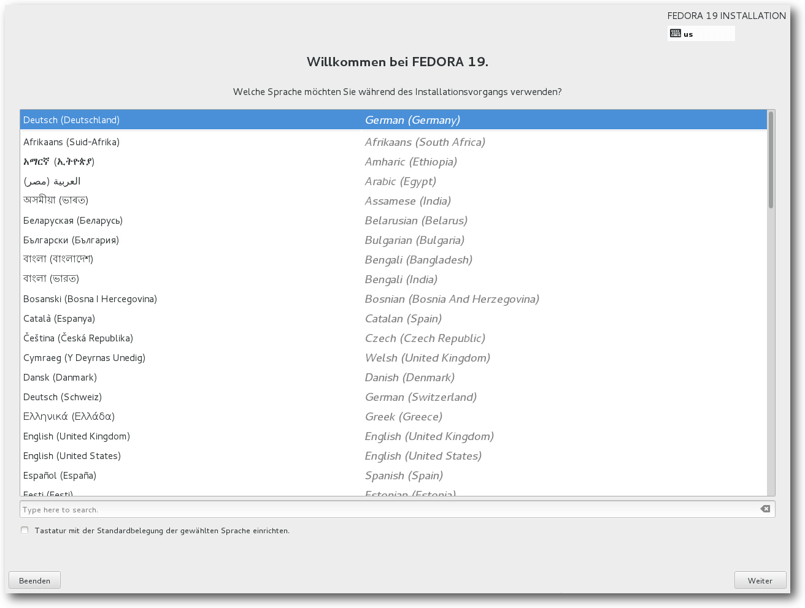Sprachauswahl auf der Boot-DVD.
Die Installation von Fedora erfordert mindestens 786 MB RAM, wie schon in Version 18. Mit weniger als 768 MB ist die Installation noch mit Einschränkungen möglich. Für den Betrieb wird mehr als ein GB empfohlen, was aber allenfalls für ziemlich alte Rechner zu einem Problem wird. 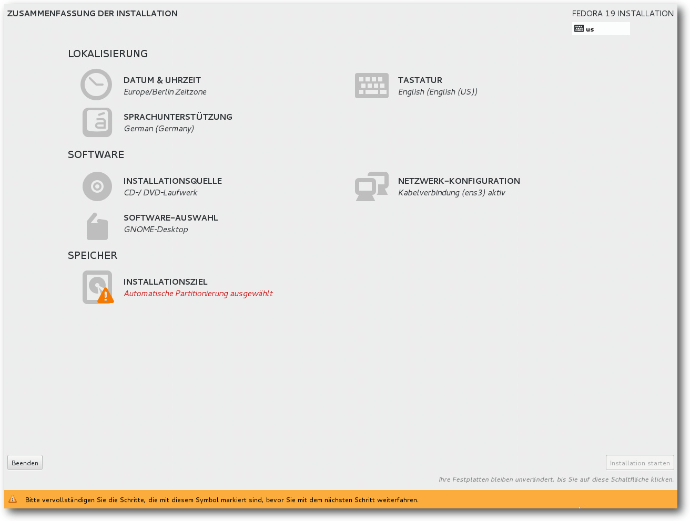
Übersichtsseite der Installation.
Nachdem in Fedora 18 das Installationsprogramm Anaconda gründlich überarbeitet und seine Oberfläche völlig neu geschrieben [3] wurde, stehen dieses Mal lediglich kleinere Verbesserungen zu Buche. Die Installation beginnt mit der Sprachauswahl, bei der interessanterweise Deutsch als Voreinstellung angeboten wird. Woher der Installer diese Vorauswahl bezieht, bleibt unklar. 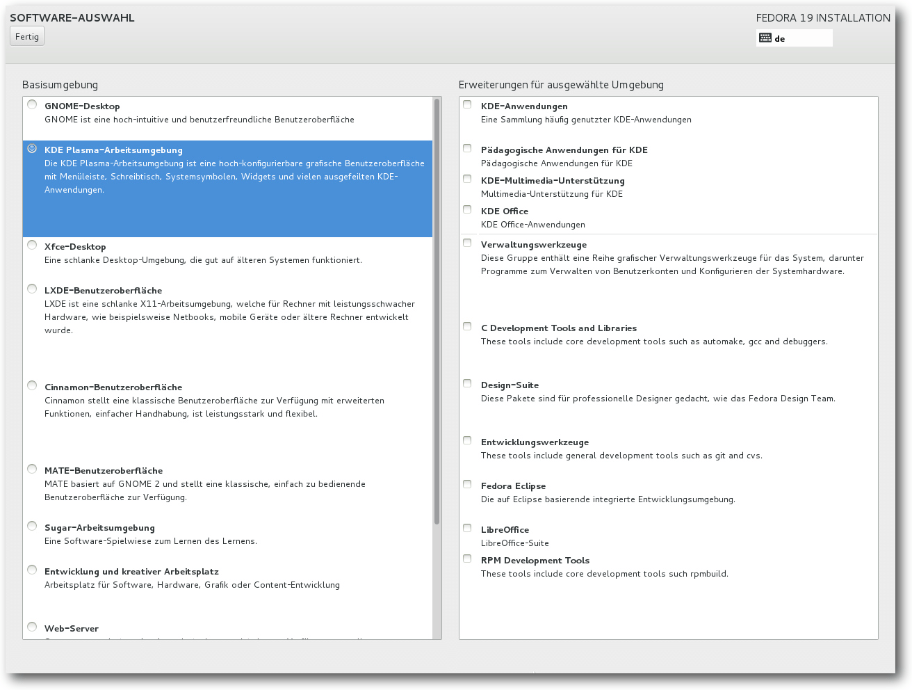
Software-Auswahl.
Danach gelangt man zur Übersichtsseite, die sich gegenüber Fedora 18 ein wenig verändert hat. Hier ermittelt das Installationsprogramm im Hintergrund bereits einige Dinge, es steht einem aber frei, diese abzuändern, und zwar weitgehend in beliebiger Reihenfolge. Alle Punkte, die vom Benutzer zwingend noch bearbeitet werden müssen, sind mit einem gelben „Warndreieck“ markiert. Die einzige zwingende Aktion ist meist die Auswahl des Installationsziels. Die erkannten Festplatten werden durch ein Icon angezeigt. Dieses enthält nun im Gegensatz zu Fedora 18 auch den Gerätenamen (/dev/sda usw.), so dass sich auch Geräte unterscheiden lassen (zumindest für Experten), die identische Modellbezeichnungen haben. 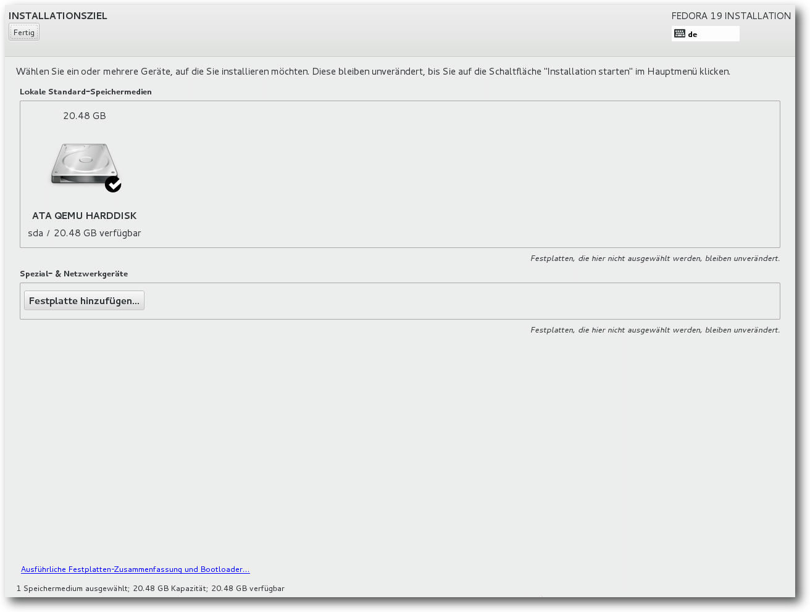
Auswahl der Partitionierungsmethode.
Man muss nun nicht mehr zwingend die Installationsquelle auswählen, da das Installationsprogramm nun korrekt annimmt, dass man von der DVD installieren will, wenn man von dieser gebootet hat. Zu empfehlen ist noch die Auswahl der Tastaturbelegung. Hinter diesem Icon stehen alle Optionen zur Verfügung, einschließlich ungewöhnlicher Belegungen und Feineinstellungen. Auch die Software-Auswahl sollte man sich noch ansehen, zumindest wenn man nicht GNOME, sondern eine andere Oberfläche installieren will. Es ist aber auch nötig, häufig benötigte Anwendungen wie LibreOffice explizit auszuwählen, sonst werden sie nicht mit installiert. Bei der Partitionierung sind die gewohnten Optionen wie die Verschlüsselung der gesamten Festplatte oder einzelner Partitionen, RAID und LVM vorhanden. Auch das Dateisystem Btrfs wird wieder unterstützt, sogar mit seinen spezifischen Funktionen wie Subvolumes. Wer die automatische Partitionierung wählt, erhält ab dieser Version eine Auswahl zwischen „normalen“ Partitionen, einer LVM-Installation und einer Btrfs-Installation. Die beiden letzteren legen eine 500 MB große, mit dem Dateisystem ext4 formatierte /boot-Partition an. Bei LVM wird der restliche Speicher als Root-Partition verwendet, mit btrfs wird eine separate /home-Partition angelegt, die sich aber aufgrund der besonderen Eigenschaften von Btrfs den Plattenplatz mit der Root-Partition teilt. Im Endeffekt ist diese Lösung noch flexibler als LVM. Neu ist in Fedora 19 die Möglichkeit, Speichermedien zu nutzen, die über Fiber Channel over Ethernet (FCoE), iSCSI oder Multipath eingebunden werden. Für Verwirrung sorgte bei mir der Versuch, eine bereits formatierte Festplatte nochmals komplett für eine Neuinstallation zu verwenden. Es war letztlich machbar, aber nicht ganz intuitiv. Während die Installation dann im Hintergrund läuft, muss man das Root-Passwort setzen und kann optional auch Benutzer anlegen. Wer bereits Fedora 18 installiert hat, kann mit dem Programm fedup auf Version 19 aktualisieren. Üblicherweise bezieht man dabei die ca. 1400 zu aktualisierenden Pakete über das Netz, aber auch andere Quellen sind möglich. Das Update auf Fedora 19 wurde für diesen Artikel nicht getestet. Man muss aber darauf achten, dass das Update das mehr als 300 MB große Bootimage an einem Ort ablegt, an dem genug Platz vorhanden ist.
Ausstattung
Nach der Installation ist keine weitere Konfiguration erforderlich. Es startet direkt der Login-Manager, der die ausgewählte Desktopumgebung startet. Der Login Manager von GNOME hat, so wie er von der DVD installiert wird, einen Fehler, der dazu führt, dass keine Passworteingabe angezeigt wird. Durch Auswahl eines Benutzers aus der Combobox lässt sich das Problem umgehen. Mit einem der ersten Online-Updates wurde es behoben. 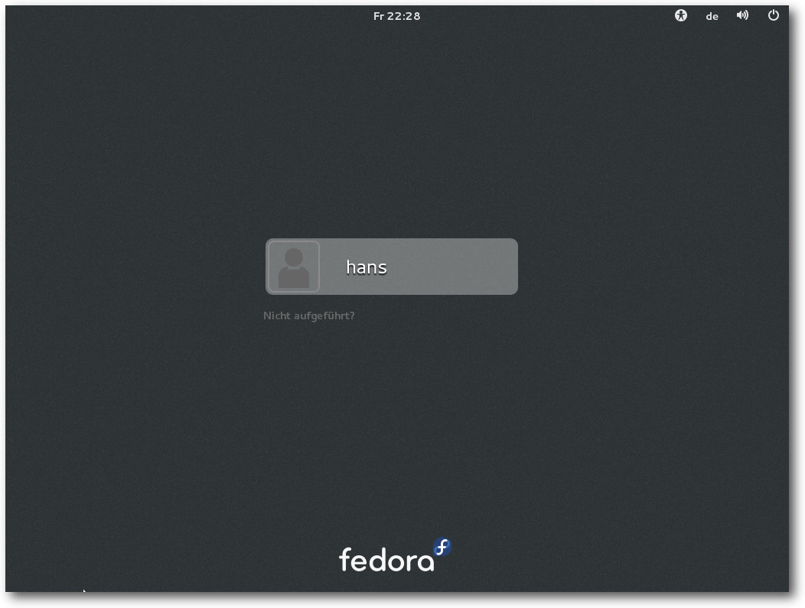Login im Display-Manager von Mate.
Unter den zahlreichen Neuerungen in Fedora 19 [1] findet man neue und aktualisierte Programme für die Modellierung und den 3D-Druck, darunter OpenSCAD, Skeinforge, SFACT, Printrun und RepetierHost. Für Entwickler gibt es den Developer's Assistant, OpenShift Origin für die Verwaltung von Clouds, die populäre Javascript- Plattform node.js zum Erstellen von skalierbaren Netzwerkanwendungen, Ruby 2.0.0 und Ruby 1.9.3 und die visuelle Entwicklungsumgebung Scratch. Wer viele Rechner automatisiert installieren will, kann jetzt auch Syslinux anstelle von GRUB als Bootloader einsetzen. Systemd wurde in vielen Punkten verbessert. Unter anderem lassen sich die Einstellungen von Diensten ohne Neustart ändern. Fedora 19 bietet Checkpoint & Restore, womit sich ein Prozess, beispielsweise zur Lastverteilung, auf einen anderen Rechner migrieren lässt. Auch eine virtuelle Maschine kann mitsamt ihrer virtuellen Festplatte verschoben werden, ohne dass ein gemeinsamer Speicher für Ausgangs- und Zielrechner existieren muss. OpenStack, eine freie Verwaltungssoftware für private und hybride Clouds, wurde in der neuen Version „Grizzly“ aufgenommen. In Fedora 19 sind zusätzlich zu den Standardkomponenten von OpenStack auch die Projekte Heat und Ceilometer verfügbar. Erstmals findet man auch die open-vm-tools, eine freie Implementierung der VMware-Tools, im Archiv. OpenLMI, eine gemeinsame Infrastruktur zur Verwaltung von Linux-Systemen, ist nun enthalten. Die neuen „High Availability Container Resources“ erweitern die Hochverfügbarkeitslösung Corosync/Pacemaker um Container in virtuellen Maschinen. Für Kerberos-Administratoren vereinfacht sich die Einrichtung von Client-Systemen. Der Kernel in Fedora 19 ist derzeit Version 3.9. Als Desktop-Umgebungen stehen unter anderem KDE SC 4.10, GNOME 3.8, Xfce 4.10, Mate 1.6, LXDE und Sugar zur Verfügung. Fedora 19 startet subjektiv etwa genauso schnell wie sein Vorgänger. Würde man es genau messen, könnte man möglicherweise eine kleine Beschleunigung feststellen, da Fedora jetzt den Inhalt der Initial Ramdisk optimiert. Das führt dazu, dass nur noch Treiber eingebunden werden, die für diesen Rechner benötigt werden. Dass dieses Verfahren fragil und sein Nutzen fragwürdig ist, muss wohl nicht extra betont werden. Ändert sich die Hardware-Ausstattung des Rechners in einer Weise, die auf den Bootvorgang Einfluss hat, muss man die Initial Ramdisk mit dracut --regenerate-all --force neu erstellen, möglicherweise von der Rettungs-Ramdisk aus. Man kann dieses Verhalten abstellen, indem man das Paket dracut-nohostonly installiert. Wie immer ist SELinux eingebunden und aktiviert. Als normaler Benutzer merkt man überhaupt nichts davon, solange die Konfiguration korrekt ist. In Fedora 19 wie auch in der Vorversion trat kein sichtbares Problem im Zusammenhang mit SELinux auf. Für den Fall, dass ein Problem auftritt – sei es nach der Installation von zusätzlicher Software oder anderen Änderungen – steht ein Diagnosewerkzeug zur Verfügung. KDE benötigt in Fedora 19 direkt nach dem Start mit einem geöffneten Terminal-Fenster etwa 500 MB RAM, Cinnamon 550 MB und Mate 270 MB. Bei der Geschwindigkeit sollte sich kein nennenswerter Unterschied zwischen den Desktops feststellen lassen, sofern genug RAM vorhanden ist und die sonstigen Voraussetzungen erfüllt sind. Beim Test unter Qemu musste für GNOME und Cinnamon leider auf das Software-3D-Rendering zurückgegriffen werden, was einige Einschränkungen zur Folge hatte. Es gibt aber immer noch Hoffnung, dass eine künftige Version von Qemu auch Hardware-3D unterstützt. Die Angaben zum Speicherverbrauch sind nur als Anhaltswerte zu sehen, die sich je nach Hardware und Messzeitpunkt erheblich unterscheiden können.
Cinnamon
GNOME 3.8 ist der Standard-Desktop von Fedora 18, wenn man nicht ausdrücklich KDE, Xfce, LXDE oder etwas anderes auswählt. Die vielleicht am sehnlichsten erwartete Änderung in GNOME 3.8 ist der Classic-Modus, der sich wieder eng an die Bedienung von GNOME 2 anlehnen soll. Technisch baut der Classic-Modus aber vollständig auf die modernen Features von GNOME 3 auf. Im Grunde handelt es sich nur um die GNOME-Shell, die mittels einiger Erweiterungen angepasst wurde. Anstelle von GNOME betrachtet dieser Artikel jedoch einmal Cinnamon, den von Linux Mint initiierten Fork der GNOME-Shell. Cinnamon besitzt keinen Classic-Modus, sondern ist in jeder Einzelheit darauf bedacht, möglichst eng am Verhalten von GNOME 2 zu bleiben. Das ist den Entwicklern in frappierender Weise gelungen. Allerdings wurde das in GNOME 2 übliche obere und untere Panel zu einem einzigen zusammengefasst und am unteren Bildschirmrand eingeblendet, was vom Aussehen mehr an KDE erinnert. Auch das Menü wurde erneuert, enthält aber immer noch die klassischen Kategorien von Anwendungen. 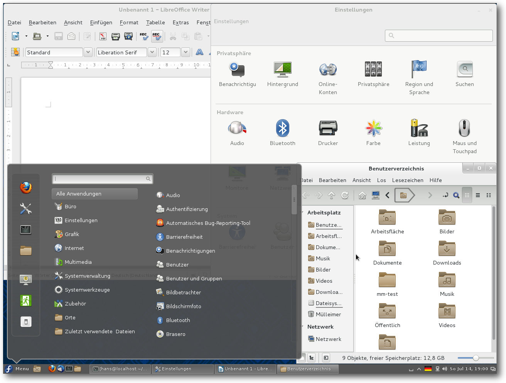Cinnamon 1.9-Desktop mit einigen Applikationen.
Der Standard-Webbrowser unter Cinnamon ist Firefox 22.0. Der Dateimanager Nemo, eine Cinnamon-Abspaltung des GNOME"=Dateimanagers Files (ehemals Nautilus), bewahrt die Funktionen, die in GNOME entfernt wurden, darunter die Möglichkeit, mehr als eine Ansicht zu öffnen, die Baumansicht auf einer Seite und das Suchen, während man Zeichen eingibt. Die GNOME-Shell und somit auch Cinnamon können dank Software-Rendering auf jeder Hardware laufen, auch wenn keine Hardware-Beschleunigung zur Verfügung steht. Das Software-Rendering ist einigermaßen schnell und durchaus noch benutzbar, doch wird man es wohl kaum ertragen, wenn man keinen sehr schnellen Prozessor hat. Die Situation bessert sich mit einem Mehrkern-Prozessor, doch Videos wird man damit wohl nicht in brauchbarer Geschwindigkeit abspielen können. Jedenfalls war es in diesem Test nicht möglich.
KDE
KDE ist in Version 4.10 enthalten, aber seit Fedora 18 nur noch als „Spin“ mit einer KDE-Live-CD. Zur Installation muss man die Fedora-Installations-DVD verwenden und bei der Software-Auswahl KDE und die benötigten Anwendungen auswählen. Den Umfang der installierten KDE-Anwendungen bestimmt man damit selbst. 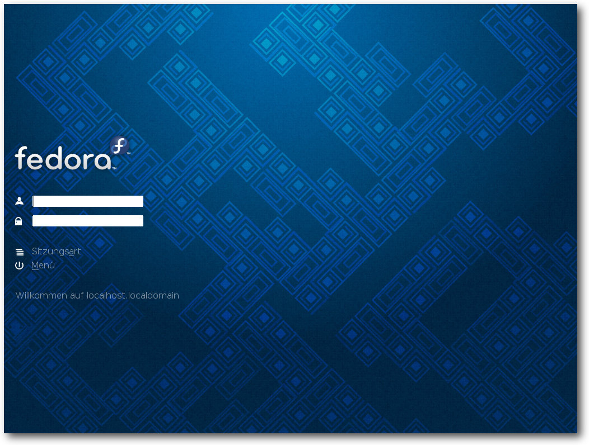Login im Display-Manager von KDE.
Qt Quick wird in den Plasma-Workspaces 4.10 noch intensiver als zuvor genutzt. Die bereits in KDE SC 4.8 eingeführten Qt-Quick-Plasma-Komponenten, die eine standardisierte API-Implementation von Widgets mit dem nativen Plasma-Aussehen bereitstellen, wurden um neue Module ergänzt. Viele weitere Plasma-Komponenten wurden neu in Qt Quick konzipiert. Unter anderem setzen die Systemleiste, der Pager, Systembenachrichtigungen und die Wetterstation auf die neue Technologie auf. Zudem haben die Entwickler die Bildschirmsperre überarbeitet, die nun ebenfalls auf Qt Quick beruht. Dank der ebenfalls auf Qt Quick aufsetzenden Wallpapers-Engine ist es nun einfacher, animierte Desktophintergründe zu erstellen. 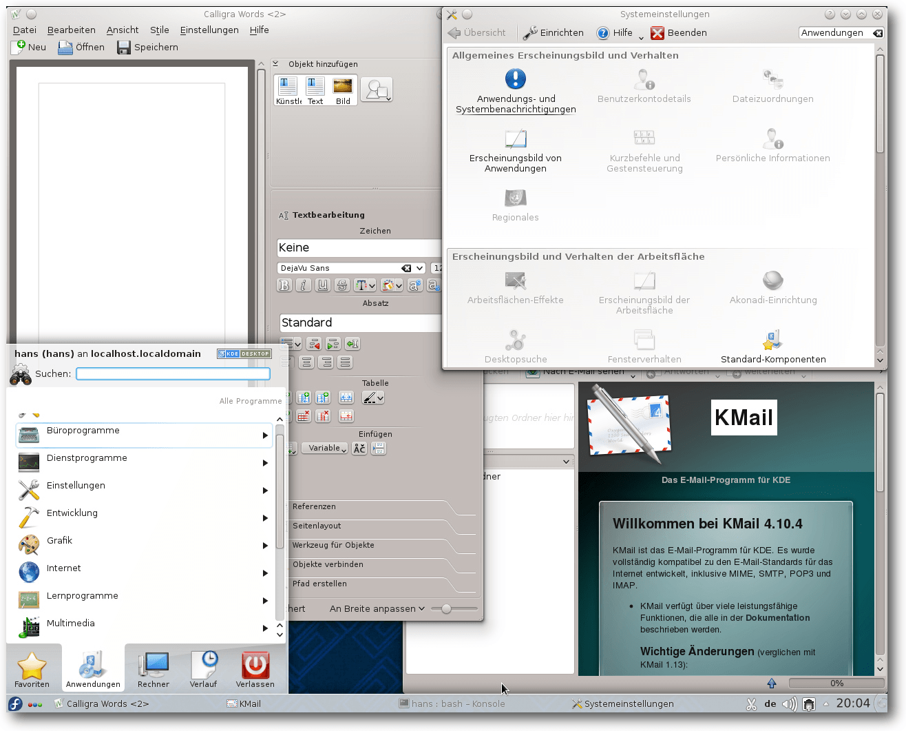
KDE 4.10-Desktop mit einigen Applikationen.
Die Umgebung wurde um das neue Air-Theme erweitert, das in Fedora aber nicht der Standard ist. Der Window-Manager KWin enthält nun eine Integration von „Get Hot New Stuff“ (GHNS), mit der zusätzliche Effekte und Skripte heruntergeladen und aktiviert werden können. Mit diesen lässt sich auch das Verhalten von KWin ändern. Der Window-Manager erkennt zudem auch unter Umständen, dass er in einer virtuellen Maschine läuft, und schaltet dann OpenGL-Compositing ein, wenn möglich. Mit dem proprietären AMD-Grafiktreiber ist jetzt auch OpenGL 2 möglich. Mehrere Anwendungen unterstützen jetzt die Farbkorrektur unter Verwendung von Farbprofilen. Das KDED-Modul KolorServer kann die Farbkorrektur für jedes Ausgabemedium separat festlegen, in einer kommenden Version soll dies für jedes einzelne Fenster möglich sein. Die Farbkorrektur in KWin befreit den Kompositor von dieser Aufgabe und ermöglicht es, die Farbverwaltung abzuschalten. KDE erhielt ein Anwendungsmenü ähnlich dem in Unity, bei dem mehrere Anwendungen ein gemeinsames globales Menü nutzen und immer nur das Menü der aktiven Anwendung sichtbar ist. Dies kann optional in einer Menüleiste am oberen Bildschirmrand dargestellt werden, die nur dann eingeblendet wird, wenn man mit der Maus an den Oberrand fährt. Das Menü soll auch bei Verwendung mehrerer Bildschirme korrekt funktionieren und kann beliebig platziert werden. Es kann auch in die Titelleiste der Anwendung verlegt werden. Wo es bereits genutzt wird, konnte jedoch nicht ermittelt werden. In Fedora 19 ändert sich an KDE nichts Grundlegendes gegenüber der Vorversion. Die neuen Funktionen werden von den Benutzern sicherlich begrüßt, und die Farbkorrektur dürfte eine wichtige Neuerung sein. Als Office-Suite ist anstatt LibreOffice die Anwendung Calligra Office installiert, doch hindert einen nichts daran, das zu ändern. Der Standard-Webbrowser ist Konqueror, augenscheinlich ohne Änderungen an den Standardeinstellungen. KDE präsentiert sich weiterhin als angenehm zu benutzen und problemlos. Hier sind die traditionellen Bedienelemente unbeschädigt erhalten und es gibt Einstellungsmöglichkeiten bis zum kleinsten Detail. Die Plasma-Oberfläche für Mobilgeräte ist vollständig separat von der Desktop-Variante und kann diese daher auch nicht beeinträchtigen. Die Anwendungen bieten einen großen Funktionsumfang und sind konfigurier- und erweiterbar. Natürlich gibt es bisweilen andere freie Anwendungen, die den KDE-Anwendungen überlegen sind oder von einigen Benutzern bevorzugt werden, aber viele KDE-Anwendungen sind gut und nützlich.
Mate
Mate versucht den eigentlich toten GNOME 2.32-Zweig am Leben zu erhalten oder wiederzuerwecken. Wie bei Cinnamon beruht seine Entwicklung darauf, dass viele Benutzer (wie viele, ist zwar fraglich, aber letztlich nicht entscheidend) mit GNOME 3 nichts anfangen konnten. Tatsächlich sieht Mate bis auf einige geänderte Icons genau wie GNOME 2.32 aus. Viele Programme wurden umbenannt oder ersetzt, doch einige haben noch „gnome“ im Namen. Mate präsentiert sich schlank und schnell, wie man das von den letzten GNOME-2-Versionen gewohnt war. Die Anzahl der Einstellmöglichkeiten wurde noch erweitert. Für viele Anwender dürfte Mate damit auf dem richtigen Weg sein – einem Weg, den GNOME nach ihrer Ansicht nie hätte verlassen dürfen. 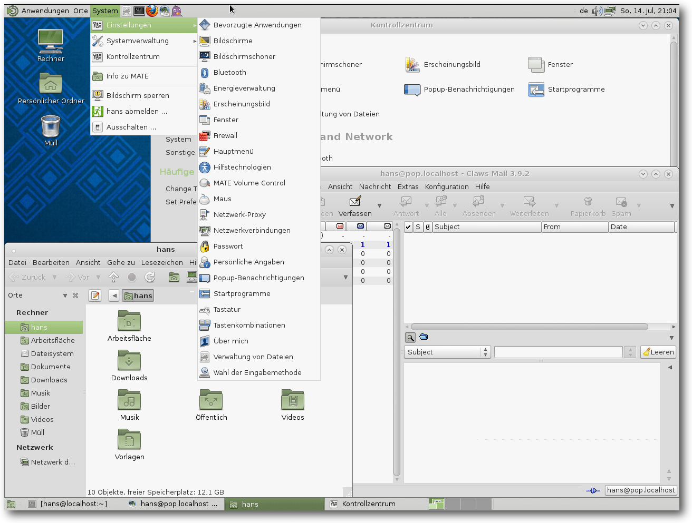Mate 1.6-Desktop mit einigen Applikationen.
Als Webbrowser wird unter Fedora 19 Firefox 22.0 ohne Erweiterungen installiert. Statt Evolution setzt man auf Claws als Mailprogramm. Mate ist schlichtweg perfekt für alle, die bei GNOME 2 bleiben wollen. 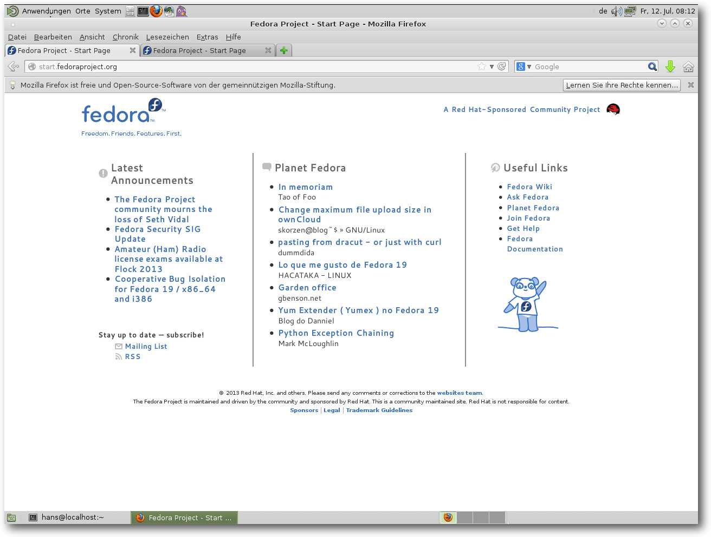
Firefox in Mate.
Technisch wird die Mate zugrundeliegende Bibliothek GTK+ 2 im Laufe der Zeit veralten. So sollte man jedenfalls denken, zumal es momentan wohl keinen offiziellen Betreuer dieser Version gibt. Doch GTK+ ist freie Software, und keine Version davon wird sterben, wenn sich jemand der Sache annnimmt. Und im Mate-Lager herrscht offenbar die Ansicht [4], dass es bald wieder so weit sein wird. Etliche Entwickler haben mittlerweile schlechte Erfahrungen bei der Portierung von GTK+ 2 nach GTK+ 3 gemacht. GTK+ 3 werde demnach immer mehr zu einer ausschließlich GNOME dienenden Bibliothek, so die Meinung einiger Entwickler. Ständig werden Änderungen ohne Rücksicht auf die Kompatibilität zu den Vorgängerversionen gemacht. Dabei wurde seit Version 3.0 nicht einmal etwas Wesentliches zu der Bibliothek hinzugefügt.
Multimedia im Browser und auf dem Desktop
Wegen der Softwarepatente in den USA kann Fedora, ebenso wie die meisten anderen Distributionen, nur wenige Medienformate abspielen, da es viele benötigte Codecs nicht mitliefern kann. Wenn man versucht, eine MP3- oder Videodatei abzuspielen, dann bieten die gängigen Player aber die Option an, über die Paketverwaltung nach passenden Plugins zu suchen. Damit die Suche in der Paketverwaltung Aussicht auf Erfolg hat, muss man vorher die zusätzlichen Repositorys von RPM Fusion [5] eintragen. Das muss man wissen oder durch Suchen im Web herausfinden. Die Repositorys kann man eintragen, indem man die Webseite von RPM Fusion besucht. Von dieser kann man Pakete installieren, die die Repositorys hinzufügen. Dies gilt für alle Desktops gleichermaßen. Die Installation funktioniert prinzipiell mit Konqueror und Firefox. Bei ersterem fiel auf, dass viel zu oft das Root-Passwort verlangt wurde und am Ende eine Fehlermeldung scheinbar den Fehlschlag der Aktion verkündete. Doch trotz dieser Meldung war alles installiert. Nicht viel besser war es unter Cinnamon mit Firefox. Dort wurde nach der Eingabe des Passwortes trotz korrekter Eingabe in der Dialogbox die Zeile „Entschuldigung, das hat nicht geklappt“ angezeigt, nur um dann fortzusetzen und die Pakete korrekt zu installieren. Ob es vielleicht nach Jahren einmal irgendjemanden interessiert, dass diese Fehler, die eigentlich ein absolutes Unding sind, endlich korrigiert werden? 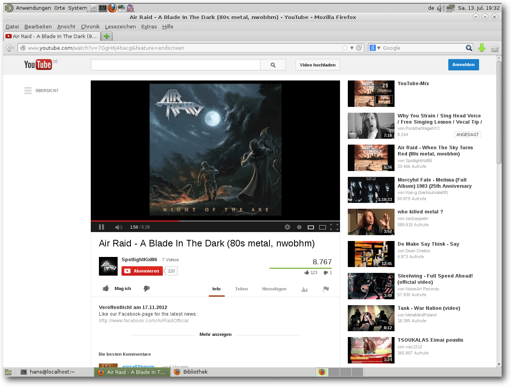Abspielen von WebM-Videos mit Firefox in Mate.
Keinerlei Probleme machte die Installation dagegen unter Mate. Nur eine Passworteingabe, einmal bestätigen und das Paket war installiert, ohne dass reale oder tatsächlich gar nicht existierende Fehler gemeldet wurden. Danach ist es ratsam, gleich die benötigten Softwarepakete zu installieren. Das erspart mögliche Probleme, bei denen die Anwendungen die nötigen Plugins doch nicht finden, falsch installieren oder Ähnliches, wie es zumindest bis Fedora 18 durchaus vorkam. Zudem muss man die Anwendungen meist neu starten, nachdem ein Plugin installiert wurde. Am schnellsten und einfachsten ist somit eine manuelle Installation der GStreamer-Plugins, insbesondere gstreamer1-plugins-ugly und gstreamer1-libav (gstreamer-plugins-ugly und gstreamer-ffmpeg für die ältere Version 0.10 von GStreamer). Standard-Player für Audio und Video ist unter Cinnamon der GNOME-Player „Videos“, früher „Totem“ genannt. Unter KDE sind es Amarok und Dragonplayer. Während Amarok funktionierte, stoppte Dragonplayer das Abspielen jedes Videos nach wenigen Sekunden und funktionierte danach nicht mehr richtig oder stürzte ab. Dragonplayer war, wie alle anderen von KDE mitgelieferten Player vor ihm, noch nie ernsthaft zu gebrauchen. Man installiert besser ein bewährtes Programm wie (S)MPlayer, VLC oder Xine. Oder besser alle drei. Unter Mate trübten zwei kleine Probleme den bis dahin guten Eindruck. Es stellte sich heraus, dass kein Audio- und kein Videoplayer installiert war, jedenfalls war auch bei gründlicher Suche keiner zu finden. Man muss also einen Player in der Paketverwaltung, die in dieser Hinsicht alles andere als komfortabel ist, suchen und installieren. Auswahl gibt es dabei genug – seltsam ist allerdings, dass keine Version von Totem für GNOME 2.32 bzw. Mate vorhanden ist. Beim Abspielen selbst gab es dann keine Problem mehr. Lediglich der Dateimanager Caja stürzte bei einer Aktion ab. Solange so etwas nur beim Abspielen von Mediendateien passiert, ist es lediglich ein kleines Ärgernis, und vielleicht steht schon bald ein Update zur Verfügung. Nachdem das Flash-Plugin für Firefox eingestellt wurde, gestaltet sich die Situation beim Abspielen von Flash-Videos aus dem Web etwas schwieriger. Eine Alternative ist natürlich Google Chrome, der den Flash-Code von Adobe eingebaut hat. Wer den unfreien Browser nicht nutzen will, hat immer noch einige Möglichkeiten. So ist das Videoformat WebM inzwischen recht verbreitet und funktioniert einwandfrei, beispielsweise bei der Tagesschau. Auf Youtube und anderen Videoseiten wird man dagegen nicht jedes Video im WebM-Format finden. In manchen Fällen hilft die freie Flash-Implementation Lightspark, die in Version 0.7.2, also nur geringfügig verbessert gegenüber Fedora 18, vorliegt, und leider nach wie vor unzuverlässig ist. Teilweise war sie nicht in der Lage, die Audiospur eines Videos wiederzugeben, obwohl das Video selbst sichtbar war. Funktioniert das alles nicht, kann man immer noch das Video herunterladen und in einem externen Player öffnen.
Paketverwaltung und Updates
Wenig hat sich bei der Paketverwaltung getan. Für die Installation bzw. Deinstallation und das Aktualisieren von Paketen existieren weiterhin separate Anwendungen, die aber auch von der Paketverwaltung aus aufgerufen werden können. Sie funktionieren normalerweise reibungslos und die Updates sind dank Delta-RPMs oft erstaunlich klein und schnell installiert. 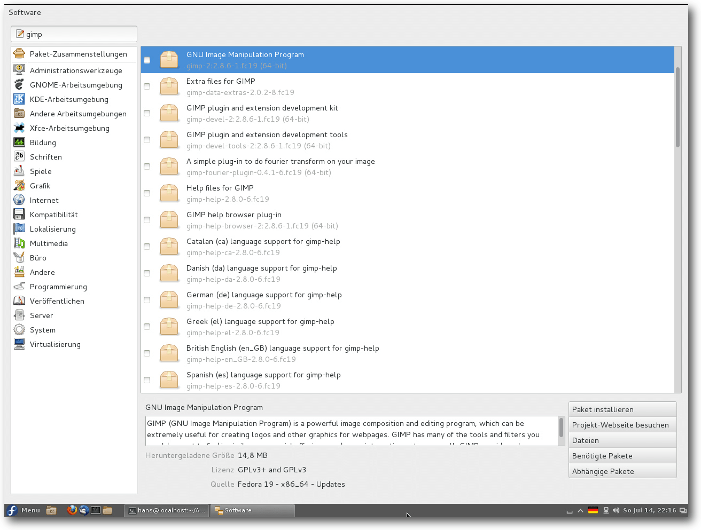Paketverwaltung gpk-application in Cinnamon.
Die Paketverwaltung baut unter GNOME und KDE grundsätzlich auf PackageKit auf. Die Programme – gpk-application 3.8.2 bzw. apper 0.8.1 – sind komfortabel genug. Etwas Vergleichbares wie das Software Center von Ubuntu bietet Fedora jedoch nicht. 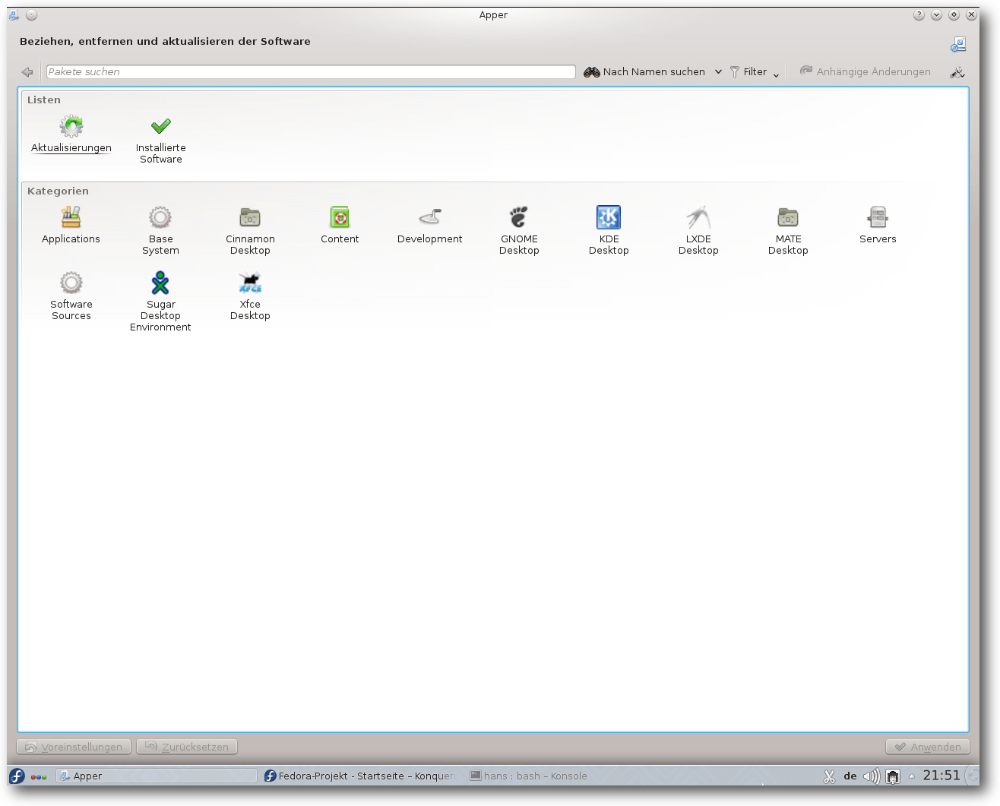
Paketverwaltung Apper in KDE.
Mate verwendet die grafische Oberfläche Yumex (Yum Extender) für die Paketverwaltung. Das Programm funktioniert recht ordentlich, allerdings besitzt es eine Unart, die in anderen Programmen bereits beseitigt wurde: Es zeigt sowohl die 32- als auch die 64-Bit-Softwarepakete an, obwohl man normalerweise nur eines davon benötigt. Auch die Suche nach Anwendungen ist nicht sehr komfortabel. Interessant ist dagegen, dass man mit Yumex den Verlauf der Software-Installationen und Updates ansehen kann. Und da diese seit einiger Zeit als Transaktionen ausgeführt werden, ist es auch möglich, diese rückgängig zu machen. In den Programmen von Cinnamon/GNOME und KDE fehlt diese Möglichkeit. DNF, ein möglicher und teilweise schnellerer Ersatz für Yum, wurde von Version 0.2 auf 0.3 aktualisiert. DNF ist zwar inoffiziell, aber wer gerne auf der Kommandozeile arbeitet, kann ruhig damit experimentieren. 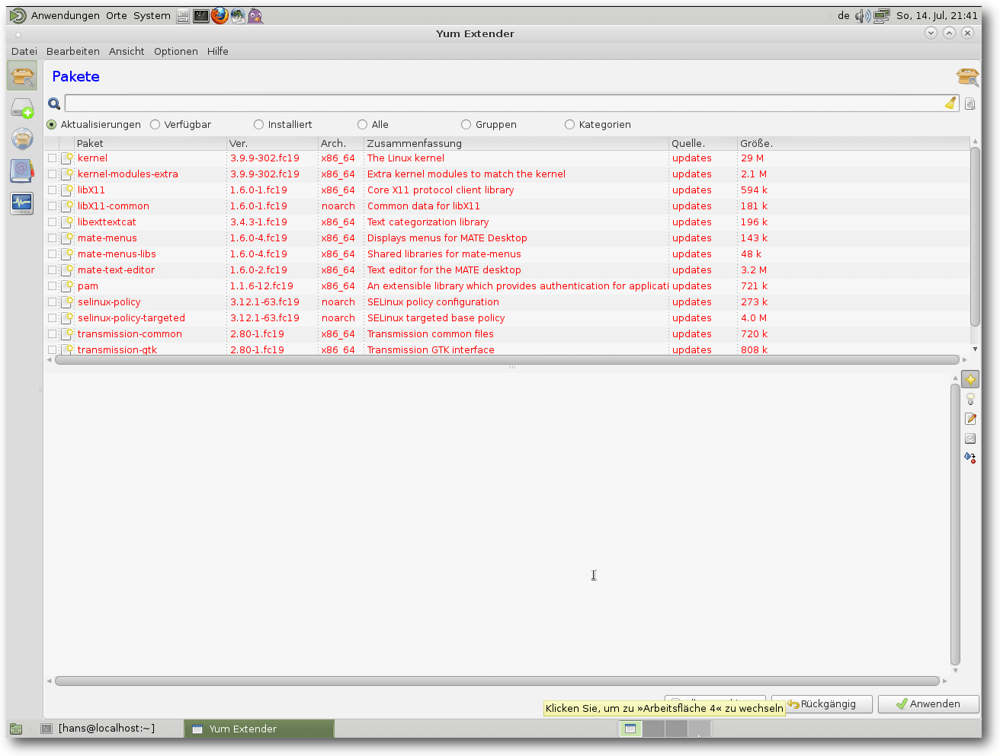
Paketverwaltung YumEx in Mate.
Fazit
Es liegt in der Natur der Sache, dass man bei der Installation eines neuen Systems auf Neuerungen stößt, die man erst einmal als ärgerlich oder unverständlich empfindet. Bisweilen ist es nötig, damit Erfahrungen zu sammeln, bis man sie verstanden hat und sie akzeptiert. Manchmal, aber bei weitem nicht immer, handelt es sich um echte Fehler. Beides macht man bei Fedora jedes halbe Jahr mit. Was die Fehler betrifft, so halten sie sich in Fedora 19 in engen Grenzen, und viele anfängliche Fehler wurden schnell behoben. Insgesamt ist Fedora für die hohe Qualität zu loben, die das Projekt mit Version 19 abgeliefert hat. Obwohl einige bedeutende Neuerungen eingeflossen sind, ist die neue Version in einem ausgezeichneten Zustand. Vielleicht spiegelt das aber auch nur die allgemeine Weisheit wider, dass die neueste Version von freien Softwareprojekten fast immer die beste ist. Bedeutende Neuerungen gegenüber Fedora 18 sind die Aufnahme von Cinnamon als Desktop-Option und die erneuerte Version von Mate. Beides wird Anhänger des alten GNOME jubeln lassen. Wie zahlreich die Nutzer von Mate bzw. Cinnamon sind, lässt sich zwar nicht beziffern, beide Umgebungen sind jedoch, rein subjektiv gesehen, für Desktops die bessere Wahl als GNOME. Enttäuschend ist, dass es es keinen Enlightenment-Spin zu geben scheint, ja nicht einmal E17-Pakete im Repository, was nach dem Erscheinen von Enlightenment 17 doch wünschenswert gewesen wäre. Doch Desktopumgebungen sind ein Stück weit auch Geschmackssache, und neben den genannten stehen noch andere zur Nutzung bereit, so dass nahezu jedem geholfen werden kann. Von den weiteren Neuerungen soll noch hervorgehoben werden, dass man nun ein rein auf btrfs beruhendes System einrichten kann, was bisher zumindest nicht auf so einfache Weise möglich war. Damit können nun viel mehr Benutzer direkt von den überragenden Fähigkeiten des neuen Dateisystems profitieren. Insgesamt hat sich an der Ausrichtung von Fedora nichts geändert. Fedora bringt reichliche und häufige Updates und ist damit immer aktuell. Doch das ist auch die größte Schwäche der Distribution: Die Basis ändert sich ständig und es gibt keine Version mit langfristigem Support. Alle sechs Monate, spätestens aber nach 13 Monaten mit dem Ende des Supports der installierten Version, ist das Update auf die neueste Version Pflicht. Das ist normalen Anwendern nicht zumutbar, nicht nur wegen des Aufwands, sondern auch weil es dabei durchaus zu unliebsamen Überraschungen kommen kann. Andere Distributionen, insbesondere Ubuntu oder Debian, bieten nicht nur wesentlich längeren Support, sondern ermöglichen auch das Update ohne Unterbrechung des Betriebs. Für mich bleibt es dabei, dass Fedora in erster Linie für erfahrene Benutzer geeignet ist, die immer die neueste Software wollen und auch kein Problem mit den Updates haben. Andere Benutzer haben keine vollständig mit Fedora vergleichbare Alternative. Es gibt natürlich Red Hat Enterprise Linux und einige davon abgeleitete Distributionen, aber diese Distributionen sind eben nicht exakt Fedora, schon weil sie nie genauso aktuell sein können. Dennoch stellt Fedora eine der besten Optionen dar, sich den aktuellen Stand der Technik in Linux anzusehen. Links[1] https://fedoraproject.org/wiki/F19_release_announcement
[2] http://www.pro-linux.de/artikel/2/1638/fedora-19.html
[3] https://fedoraproject.org/wiki/Features/NewInstallerUI
[4] http://forums.mate-desktop.org/viewtopic.php?f=16&t=1890
[5] http://rpmfusion.org/
| Autoreninformation |
| Hans-Joachim Baader (Webseite) befasst sich seit 1993 mit Linux. 1994 schloss er erfolgreich sein Informatikstudium ab, machte die Softwareentwicklung zum Beruf und ist einer der Betreiber von Pro-Linux.de. |
Diesen Artikel kommentieren
Zum Index
Der August im Kernelrückblick
von Mathias Menzer Basis aller Distributionen ist der Linux-Kernel, der fortwährend weiterentwickelt wird. Welche Geräte in einem halben Jahr unterstützt werden und welche Funktionen neu hinzukommen, erfährt man, wenn man den aktuellen Entwickler-Kernel im Auge behält.Linux 3.11
Die Entwicklung von Linux 3.11 ist noch nicht zum Ende gelangt. Die vierte Entwicklerversion [1] ließ noch keine Anzeichen zur Beruhigung erkennen und hatte nahezu das gleiche Volumen wie -rc3. Immerhin lässt sich ein guter Teil der Änderungen auf den Umzug von printk() in ein eigenes Unterverzeichnis zurückführen. Dies ändert zwar nichts an der Funktionalität, sorgt aber für ein wenig Ordnung. Am 11. August legte Torvalds den -rc5 [2] vor. Seine Veröffentlichungsmail lässt darauf schließen, dass er insgeheim hoffte, Linux 3.11 an diesem Datum als fertige Version zur Verfügung stellen zu können, doch eine Entwicklungszeit von nur 42 Tagen war dann doch etwas unrealistisch. Immerhin ging das Volumen der Änderungen ein gutes Stück zurück und konnte als Signal für die Stabilisierung in der Entwicklung gesehen werden. Linux 3.11-rc6 [3] konnte diesen Trend fortsetzen und wies abermals weniger Änderungen auf. Neben der Korrektur eines älteren, jedoch nur selten ausgelösten Fehlers in einem Teil der Speicherverwaltung, nahmen sich die Patches recht unspektakulär aus. Die siebte Entwicklerversion [4] konnte wieder mit einem besonderen Datum aufwarten, wenn auch der Jahrestag nicht ganz „rund“ war. Am 26. August 1991 schrieb Torvalds an die Usenet-Liste comp.os.minix [5] seine erste Ankündigung des damals noch namenlosen Betriebssystem. Daran angelehnt formulierte er seine Ankündigung des -rc7: „I'm doing a (free)operating system (just a hobby, even if it's big and professional) …“ Die Zahl der Änderungen reduzierte sich abermals und weist nur noch Korrekturen auf. Damit dürfte die Veröffentlichung der finalen Version bald erfolgen.Linux 3.10
Jedes Jahr wählt Greg Kroah-Hartman eine Kernel-Version aus, die er für mindestens zwei Jahre pflegen wird. Als Ersatz für die im Oktober diesen Jahres auslaufende Langzeit-Unterstützung des Linux-Kernels 3.0 wurde nun der derzeitige Stable-Kernel 3.10 ausgewählt. Auch der LTSI-Kernel der Long Term Support Initiative [6] wird künftig auf Linux 3.10 basieren.Kernel Summit
Einer der Termine, an denen die Entwickler des Linux-Kernels zusammenkommen, ist der Kernel Summit [7]. Zum diesjährigen, im schottischen Edinburgh stattfindenden Kernel Summit, lädt der Hauptentwickler des Ext4-Dateisystems, Ted Ts'o nun einige Hobby-Entwickler ein. Jeder, der am Linux-Kernel und seinen Komponenten mitarbeitet, ohne dafür bezahlt zu werden, konnte sich hierfür bewerben. Links[1] https://lkml.org/lkml/2013/8/4/124
[2] https://lkml.org/lkml/2013/8/11/125
[3] https://lkml.org/lkml/2013/8/18/202
[4] https://plus.google.com/+Linux/posts/f96weYxzEu1
[5] https://groups.google.com/forum/#!msg/comp.os.minix/dlNtH7RRrGA/SwRavCzVE7gJ
[6] http://ltsi.linuxfoundation.org/
[7] http://events.linuxfoundation.org/events/linux-kernel-summit
| Autoreninformation |
| Mathias Menzer (Webseite) behält die Entwicklung des Linux-Kernels im Blick, um über kommende Funktionen von Linux auf dem laufenden zu bleiben. |
Diesen Artikel kommentieren
Zum Index
960-Grid-System – Eine CSS-Bibliothek für Spaltenlayouts
von Jochen Schnelle Das Internet und dessen primär HTML-basierter Inhalt ist heute allgegenwärtig. Dem Einstellen von eigenen Inhalten stehen dabei keine fundamentalen Hindernisse entgegen - (kostenlosen) Webspace gibt es in Hülle und Fülle. Den Inhalt für die Webseite zu schreiben, ist in der Regel nicht das Problem, eine ansprechende Formatierung dann schon eher. Hier hilft die CSS-Bibliothek 960-Grid-System [1]. Im Print-Bereich werden schon lange Gestaltungsraster [2] eingesetzt. Dabei wird der Inhalt anhand (nicht sichtbarer) Rasterlinien auf der Seite ausgerichtet. Dieses bewährte Konzept lässt sich auch sehr gut auf HTML-basierte Webseiten übertragen [3].CSS macht es möglich
In der „Sturm und Drang“-Zeit des Webs wurden mehrspaltige Layouts gerne mit Tabellen realisiert – was heute zurecht als verpönt gilt. Gemäß der Maxime „Trennung von Form und Inhalt“ werden HTML-Seiten mit Hilfe vom Cascading Style Sheets [4] (kurz: CSS) in Form gebracht. Nun ist das Schreiben von eigenen Style Sheets grundsätzlich nicht weiter schwierig, kann aber, je nach gewünschtem Ergebnis, doch recht komplex werden. Und gerade Einsteiger und Gelegenheitswebdesigner tun sich manchmal schwer, Elemente auf der Webseite wie gewünscht zu positionieren. Hier kommt das 960-Grid-System ins Spiel. Dieses definiert in einer CSS-Datei verschiedene CSS-Klassen, mit deren Hilfe man den Inhalt schnell und einfach in Spalten ausrichten kann. Dies ist natürlich nicht nur für Einsteiger interessant, sondern ermöglicht auch professionellen Webdesignern, schnell und einfach zu einem Ergebnis zu kommen.960 Pixel Breite
Das 960-Grid-System setzt auf einen 960-Pixel-breiten Darstellungsbereich. Dieser wird automatisch zentriert auf dem Bildschirm dargestellt. Innerhalb dieser 960 Pixel kann die CSS-Bibliothek entweder 12-, 16- oder 24-spaltige Layouts erstellen. Dabei können Spalten natürlich beliebig zusammengefasst werden. Eine Reihe von Webseiten – u. a. auch die des Fedora-Projekts – welche 960-Grid-System nutzen, sind auf der Homepage der CSS-Bibliothek aufgelistet.Download des 960-Grid-Systems
Bevor es los geht, werden die notwendigen CSS-Dateien benötigt. Auf der Homepage des Projekts [1] findet sich der Download prominent verlinkt. Hier lädt man allerdings eine ca. 4 MB große zip-Datei herunter. Diese enthält viel mehr als nur die CSS-Dateien. In dem Archiv sind unter anderem auch Layoutvorlagen für z. B. Gimp, Inkscape, Flash und diverse kommerzielle Design-Programme enthalten. Die eigentlichen CSS-Dateien befinden sich im Ordner /code/css. Benötigt werden drei Dateien: 960.css, text.css und reset.css. Alternativ kann man nur diese drei Dateien bei Github herunterladen [5].Ein einfaches Beispiel
Um die CSS-Bibliothek zu nutzen, müssen die drei weiter oben genannten Dateien in der richtigen Reihenfolge eingebunden werden. Davon ausgehend, dass die Dateien im Verzeichnis css liegen, müssen in der eigenen HTML-Datei die folgenden drei Zeilen im <head>-Bereich der Seite eingefügt werden:<link rel="stylesheet" href="css/reset.css" />
<link rel="stylesheet" href="css/text.css" />
<link rel="stylesheet" href="css/960.css" />
reset.css setzt die Einstellung für alle Element zurück, text.css definiert
ein einfaches Format für die diversen HTML-Elemente, 960.css enthält die
eigentlichen Klassen zur Layout-Gestaltung. Wer noch ein eigenes Stylesheet
benötigt, der kann dies danach noch einbinden.
Eine komplette HTML-Datei sieht dann z. B. so aus:
<link rel="stylesheet" href="css/text.css" />
<link rel="stylesheet" href="css/960.css" />
<!DOCTYPE html>
<html lang="de">
<head>
<meta charset="utf-8" />
<title>960 Grid System - freiesMagazin</title>
<link rel="stylesheet" href="css/reset.css" />
<link rel="stylesheet" href="css/text.css" />
<link rel="stylesheet" href="css/960.css" />
</head>
<body>
<div class="container_12">
<h2>
12-spaltiges Layout
</h2>
<div class="grid_12">
<p>
Dieser Text geht über die volle Breite aller zwölf Spalten.
</p>
</div>
<div class="clear"></div>
<div class="grid_4">
<p>
Dieser Text geht über die ersten vier Spalten.
</p>
</div>
<div class="grid_8">
<p>
Und dieser Text geht dann über die verbleibenden acht Spalten.
</p>
</div>
<div class="clear"></div>
</div>
</body>
</html>
Listing: 960gridsystem.html
Wie darin zu sehen ist,
ist der Einsatz der CSS-Bibliothek recht einfach.
Als erstes wird innerhalb eines <div>-Elementes, welches den zu
formatierenden Inhalt umschließt,
die CSS-Klasse container_12 festgelegt. Diese steht für
ein 12-spaltiges Layout. In den darauf folgenden <div>-Elementen wird über
class="grid_X" festgelegt, über wie viele Spalten das Element sich erstrecken
soll. Hier also im ersten Fall über 12 Spalten, also die volle Breite, im
zweiten Fall über vier und acht Spalten.
Wichtig ist, dass nach jedem Wechsel der Spaltenzahl ein <div class="clear"></div>
eingefügt wird, damit der folgende Inhalt korrekt dargestellt wird.
Der Einsatz von class="grid_X" ist übrigens nicht auf <div>-Elemente beschränkt,
sondern kann auch auf andere HTML-Elemente angewendet werden. Wer ein 16- oder
24-spaltiges Layout benötigt, der ersetzt einfach class="container_12" durch
class="container_16" bzw. class="container_24". Wichtig ist noch, dass sich die
Werte von grid_X immer auf die angegebene Gesamtspaltenzahl addieren.
Eine Übersicht über die Spaltenbreiten ist auf
der Demo-Seite des Projekts zu finden [6].
<html lang="de">
<head>
<meta charset="utf-8" />
<title>960 Grid System - freiesMagazin</title>
<link rel="stylesheet" href="css/reset.css" />
<link rel="stylesheet" href="css/text.css" />
<link rel="stylesheet" href="css/960.css" />
</head>
<body>
<div class="container_12">
<h2>
12-spaltiges Layout
</h2>
<div class="grid_12">
<p>
Dieser Text geht über die volle Breite aller zwölf Spalten.
</p>
</div>
<div class="clear"></div>
<div class="grid_4">
<p>
Dieser Text geht über die ersten vier Spalten.
</p>
</div>
<div class="grid_8">
<p>
Und dieser Text geht dann über die verbleibenden acht Spalten.
</p>
</div>
<div class="clear"></div>
</div>
</body>
</html>
Weitere Möglichkeiten
Das oben gezeigte, zweispaltige Layout mittels grid_4 und grid_8 ist z. B. recht praktisch, um schnell und unkompliziert einen Navigations- und einen Inhaltsbereich zu erstellen. Aber vielleicht sähe es ja besser aus, wenn der grid_4-Bereich rechts wäre und der grid_8-Bereich links? Um dies schnell zu testen, kennt das 960-Grid-System noch die Klassen push_X und pull_X, wobei das X auch hier für eine Zahl steht. Um die Spalten zu tauschen, werden die beiden Zeilen im Listing oben geändert:<div class="grid_4 push_8">
<div class="grid_8 pull_4">
Das ist alles. Wird die Seite im Browser neu geladen, dann sind die Spalten
vertauscht.
Oder vielleicht soll aus optischen Gründen noch eine Leerspalte zwischen dem
4-spaltigen und 8-spaltigen Bereich stehen? Dazu ersetzt man die beiden Zeilen
wie folgt:
<div class="grid_8 pull_4">
<div class="grid_4 suffix_1">
<div class="grid_7">
Wer eine Leerspalte davor statt dahinter benötigt, der nutzt statt der CSS-Klasse suffix_X
einfach prefix_X.
<div class="grid_7">
Unterspalten
Sollte eine weitere Unterteilung innerhalb der Spalten notwendig sein, so kennt das 960-Grid-System auch eine Lösung. Um den grid_8-Bereich gemäß obigen Beispiel nach dem vorhandenen Text noch weiter in zwei vierspaltige Bereiche aufzuteilen, wird nach dem </p> noch folgendes HTML eingefügt:<div class="grid_4 alpha">
<p>Erste Unterspalte.</p>
</div>
<div class="grid_4 omega">
<p>Zweite Unterspalte.</p>
</div>
Die Klassen alpha und omega stehen dabei für die erste und letzte
Unterspalte.
<p>Erste Unterspalte.</p>
</div>
<div class="grid_4 omega">
<p>Zweite Unterspalte.</p>
</div>
Alternativen
Das 960-Grid-System ist nicht die einzige CSS-Bibliothek, die solche spaltenbasierten Layouts vereinfacht. So bietet z. B. auch die zur Zeit recht populäre, von Twitter entwickelte CSS-Bibliothek bootstrap.css [7] ein Grid-System. Dieses ist 940 Pixel breit und „reagiert“ auf unterschiedliche Media-Queries [8]. Hier ist die Spaltenanzahl aber auf maximal 12 festgelegt. Des Weiteren wird früher oder später auch ein Grid-Layout direkt via CSS3 möglich sein, ohne zusätzliche Bibliotheken. Allerdings befindet sich dieses System seitens des W3C noch im Entwurfsstadium [9] und es gab schon verschiedene Änderungen an der Syntax. Wann eine finale, stabile Version feststeht und wann diese dann letztendlich von allen gängigen Browser unterstützt wird, ist offen.Zusammenfassung
Die CSS-Bibliothek 960-Grid-System macht es einfach, Webseiten mit einem spaltenbasiertem Layout zu formatieren. Durch die Wahl der Gesamtbreite des Darstellungsbereichs von 960 Pixeln sind die Layouts gleichermaßen für Desktoprechner als auch mobile Geräte, die zumeist nur eine geringere Bildschirmauflösung besitzen, geeignet. Links[1] http://960.gs/
[2] http://de.wikipedia.org/wiki/Gestaltungsraster
[3] http://www.egh-online-media.de/onlinemedien/professionelles-webdesign/der-raster-im-webdesign.html
[4] https://de.wikipedia.org/wiki/Cascading_Style_Sheets
[5] https://github.com/nathansmith/960-Grid-System/tree/master/code/css
[6] http://960.gs/demo.html
[7] http://getbootstrap.com/
[8] https://de.wikipedia.org/wiki/Responsive_Webdesign
[9] http://dev.w3.org/csswg/css-grid/
| Autoreninformation |
| Jochen Schnelle (Webseite) programmiert ab und an Python-basierte Webapplikation. Das 960-Grid-System benutzt er dabei, um den Inhalt „in Form“ zu bringen. |
Diesen Artikel kommentieren
Zum Index
Liquid prompt – Eine erweiterte Prompt für Bash und zsh
von Sujeevan Vijayakumaran Als Linux-Anwender greift man häufig zur Shell, um mit dieser zu arbeiten, beispielsweise zur Aktualisierung oder Installation von Paketen. Liquid prompt [1] erweitert automatisch die Kommandozeile um einige nützliche Funktionen und ist besonders für die Nutzer geeignet, die viel mit der Shell arbeiten. Dabei wird sowohl die Bash [2] als auch die zsh [3] unterstützt. Welche Features es hat und in welchen Fällen es ziemlich nützlich ist, wird im Artikel erklärt.Installation
Für die Installation von Liquid prompt gibt es für die gängigen Distributionen kein Paket, stattdessen kann man sich den aktuellen Stand aus dem Git-Repository herunterladen und dann nutzen. Dazu muss git installiert sein. Zunächst holt man den aktuellen Stand vom GitHub-Repository:$ git clone https://github.com/nojhan/liquidprompt.git
Im Anschluss kann man Liquid prompt mit folgendem Befehl aktivieren:
$ source liquidprompt/liquidprompt
Hiermit wird Liquid prompt allerdings nur ein einziges Mal aktiviert. Um es
dauerhaft zu aktivieren, muss der obere Befehl in die .bashrc bzw. in die
.zshrc kopiert werden, je nachdem welche Shell man nutzt. Dabei muss
beachtet werden, dass der absolute Pfad eingetragen wird.
Im letzten Schritt kann Liquid prompt noch sehr gut konfiguriert werden.
Die Konfigurationsdatei liegt unter
liquidprompt/liquidpromtrc-dist.
Diese Datei sollte dann entweder nach ~/.config/liquidpromptrc oder
nach ~/.liquidpromptrc kopiert werden.
Die Installation von Liquid prompt ist hiermit abgeschlossen. Bei Erscheinen
einer neueren Version reicht es, ein git pull im Verzeichnis liquidprompt
auszuführen.
Was es kann
Bis jetzt wurde noch nicht wirklich erklärt, was Liquid prompt wirklich kann. Die Aktivität von Liquid prompt merkt man im schlechtesten Falle gar nicht. Dies hängt meist davon ab, in welchem Verzeichnis man sich gerade befindet. Der Anwendungsfall von Liquid prompt ist nämlich ziemlich variabel, nicht zuletzt deswegen heißt es „liquid“ (auf Deutsch: „flüssig“). Bei einer reinen Bash, d. h. ohne eine modifizierte .bashrc, sieht die Prompt in etwa so aus:[sujee@thinkpadx ~]$
Den meisten dürfte bekannt sein, dass hierbei vier Dinge angezeigt werden: Der
Benutzername (hier: sujee), der Rechnername (hier: thinkpadx), das aktuelle
Verzeichnis (hier: ~) sowie das Dollar-Zeichen, die eigentliche Shell-Prompt.
Wie oben beschrieben, aktiviert man mit
$ source ~/liquidprompt/liquidprompt
Liquid prompt. Bei einer angepassten Konfiguration von Liquid prompt
erscheint das Home-Verzeichnis beispielsweise mit weiteren Informationen:
11:24:51 ⌁58% [sujee:~] $
Dies wäre zum einen die aktuelle Uhrzeit und zum anderen der aktuelle Ladestatus
des Laptop-Akkus. Die einzelnen Elemente der Prompt werden dabei farbig dargestellt.
Für die einzelnen Funktionen gibt es in der Konfigurationsdatei Schalter zum
Aktivieren bzw. Deaktivieren der Funktion. Die Uhrzeit in der Prompt ist im
Standard ausgeschaltet. Zum Aktivieren reicht es,
LP_ENABLE_TIME=1
zu setzen.
Die Konfigurationsdatei ist generell ziemlich gut kommentiert, sodass man
recht gut sieht, welcher Schalter welche Funktionen auslöst.
Für Entwickler
Für Entwickler ist besonders die Funktion für die verschiedenen Versionsverwaltungssysteme interessant und ziemlich nützlich. Unterstützt werden Git, Subversion, Mercurial, Fossil und Bazaar. Liquid prompt erkennt automatisch, wenn man sich in einem Verzeichnis befindet, welches ein Repository [4] der oben genannten Versionsverwaltungssysteme ist. Beim Betreten eines Git-Repositorys wird angezeigt, in welchem Zweig man sich befindet und ob lokale Änderungen durchgeführt worden sind, die noch nicht in das Repository übertragen wurden. Wenn keine lokalen Änderungen vorhanden sind, wird der Zweigname in Grün angezeigt, wenn doch, wird er in Rot dargestellt und in Klammern die Anzahl von hinzugefügten und gelöschten Zeilen angezeigt. Entwicklern kann dies zum Teil Arbeit ersparen, da so ein Prüfen des Repositorys mit git status nicht notwendig ist. Ähnliche Funktionen sind dabei auch für andere unterstützte Versionsverwaltungssysteme enthalten. 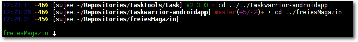Ansicht von Repository-Informationen mit der Uhrzeit und der aktuellen Ladekapazität des Akkus.
Weitere Anzeigen
Neben diesen Features können noch einige System-Informationen dargestellt werden. Im Standard werden jedoch nur wenige Informationen dargestellt. Diese erscheinen nur dann, wenn sie wirklich notwendig sind. So wird unter anderem die Systemlast nur dann angezeigt, wenn diese sehr hoch ist. Das gleiche gilt dabei auch für die Prozessor-Temperatur. Diese Werte lassen sich aber ebenfalls sehr gut und individuell anpassen. Liquid prompt besitzt noch einige weitere Funktionen, die hier nicht weiter aufgeführt werden. Wer die komplette Funktionsvielfalt nachlesen möchte, findet eine Feature-Liste in der README des GitHub-Repositorys [5]. Darin wird auch erklärt, wie man beispielsweise die Reihenfolge der Elemente der Prompt vertauschen kann oder auch die Nutzung verschiedener Themes. Auch die Anpassung von einzelnen Farben eines Themes ist möglich.Fazit
Der Nutzer kann dabei Liquid prompt vollkommen nach seinem eigenen Gefallen anpassen. Besonders für Shell-Liebhaber bietet Liquid prompt sehr viele nützliche Features, die die Funktionen der Prompt deutlich erweitern und somit auch die eigene Arbeit erleichtern. Durch die hohe Anpassungsfähigkeit kann jeder Benutzer selbst seine Prompt designen. Links[1] https://github.com/nojhan/liquidprompt
[2] http://tiswww.case.edu/php/chet/bash/bashtop.html
[3] http://zsh.sourceforge.net/
[4] https://de.wikipedia.org/wiki/Repository
[5] https://github.com/nojhan/liquidprompt#features
| Autoreninformation |
| Sujeevan Vijayakumaran (Webseite) stolperte vor einigen Monaten über Liquid prompt, nachdem er einen Blog-Artikel gelesen hatte und war von Anfang an von den Möglichkeiten, die Liquid prompt bietet, begeistert. |
Diesen Artikel kommentieren
Zum Index
Steam – Fluch oder Segen?
von Florian E.J. Fruth Passt ein Artikel über Steam überhaupt in dieses Magazin? Gerade weil Valve mit Steam für Linux nicht nur positives Feedback erhalten hat, sollen die Vor- und zu einem Teil auch die Nachteile zum anstehenden zehnten Geburtstag [1] als Diskussionsgrundlage dargestellt werden. Vor allem an der Frage, ob Steam der Linux-Community eher hilft oder schadet, scheiden sich die Geister. Kurz nach der Jahrtausendwende war Linux als Standardbetriebssystem auf Desktops die Ausnahme. Nur von einigen wenigen Kennern und in Teilbereichen von Universitäten wurde Linux als Standard gelebt. Sehr häufig war jedoch auch weiterhin eine Windows-Partition mit auf der gleichen Festplatte, da es zu viel Software gab (und leider immer noch gibt), die nur mit Windows lauffähig war (z. B. Microsoft Outlook, Autocad, SteuerSparErklärung). Ein weiterer Teilbereich, der fast ausschließlich auf Windows setzte, war die Spielebranche. Electronic Arts hat beispielsweise als einer der großen Publisher bis heute nur rudimentäre Gehversuche unter Linux vorzuweisen, mit zwei Browserspielen, die im Ubuntu Software Center veröffentlicht wurden [2] und auch bei den meisten anderen Publishern suchte man vergebens nach Linux-Portierungen ihrer Spiele. Dies hatte zur Folge, dass selbst bei überzeugten Linux-Nutzern eine Windows-Partition zum Spielen vorhanden war.Der Anfang
Ich hatte schon sehr früh versucht, auch unter Linux nicht auf Spiele verzichten zu müssen. Das Spiel Quake III Arena [3] war jedoch eine der wenigen Ausnahmen, die ohne Probleme unter Linux lauffähig waren. Die Versuche, Windows-Spiele unter Linux mittels Wine [4] zu starten, hatten selten Erfolg. Im besten Fall führte dies nur zu leichten Grafikfehlern oder Performance-Problemen. 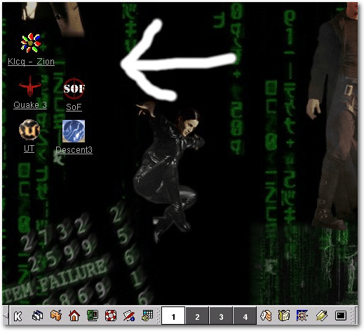Mein Desktop im Jahr 2000.
Meist hatten die Spiele jedoch ihren Dienst komplett verweigert. Als positives Beispiel sei hier Counter-Strike [5] erwähnt, welches relativ gut unter Wine funktionierte [6]. Dieser Umstand war wahrscheinlich der breiten CS-Spielergemeinde geschuldet. Anfang des Jahrtausends konnten die meisten Bewohner Deutschlands, erstens nur zeitweise und zweitens nur mit einem 56k-Modem [7] im Internet surfen. Somit „musste“ man sich für das Spielen eines Multiplayer-Spiels zwangsweise mit Freunden treffen. Es wurde also lange geplant, wann und wo man sich in der Freizeit mit ein paar Hundert Leuten in Schulen, Fabrikhallen oder ähnlichen trifft, um gemeinsam bzw. gegeneinander spielen zu können. Eines der am weitesten verbreiteten Spiele war der oben schon erwähnte Taktik-Shooter Counter-Strike.
Die Grundlage
Am 12. September 2003 hat Valve mit Steam [8] die Grundlage für ihr heutiges Geschäftsmodell gelegt. Gedacht war Steam zuerst als Kopierschutz, Anti-Cheat-Technologie und für die zentrale Verwaltung der Multiplayer-Spiele aus dem eigenen Hause. Da das Spielen von aktuellen Counter-Strike-Versionen (v1.6 Beta [9]) auf LAN-Partys [10] damit jedoch auch zwingend Steam voraussetzte, mussten sich viele Spieler zwangsweise bei Steam registrieren. Somit hatte sich Valve eine breite Benutzerbasis gesichert und diese bis heute kontinuierlich ausgebaut. Über mittlerweile fast 10 Jahre wurden auch Spiele von Drittherstellern über Steam veröffentlicht und die Funktionalitäten ausgebaut. Zum Beispiel können heutzutage Spieler ihre Spielstände in der Steam-Cloud sichern, erhalten sogenannte „Achievements“ und können plattformübergreifend spielen. Nicht alle Hersteller verwenden dabei das Kopierschutzmodul, welches von der Steam-Plattform zur Verfügung gestellt wird. Somit können einige über Steam gekaufte Spiele nach der Installation kopiert und als Standalone-Variante gespielt werden [11]. Dies sind jedoch nur Ausnahmen. Die meisten Spiele lassen sich nicht von Steam entkoppeln.Die Vision
Michael Larabel, der Gründer von Phoronix, hatte schon im Frühjahr 2010 erste Anzeichen dafür gefunden, dass es neben der Mac-OS-X-Version auch eine Linux-Version von Steam geben könnte [12]. Sicherlich waren es nicht nur Skeptiker, die diesen Andeutungen nicht den geringsten Glauben geschenkt hatten. Dies liegt sicher auch daran, dass Linux-Spieler doch in vielen Jahren immer wieder von Firmen und ihren leeren Versprechen enttäuscht werden. Ein Beispiel hierfür ist der Linux-Port des Ego-Shooters Unreal Tournament 3, welcher kurz nach der Windows-Veröffentlichung im Jahr 2008 erscheinen sollte [13] und Ende 2010 aber endgültig für tot erklärt wurde [14]. Eine weitere Enttäuschung war ID Software, die Linux anfänglich sehr gut unterstützt hatten und einige Spiele auf Linux portiert haben, bei ihren beiden neusten Veröffentlichungen Doom 3 BFG und Rage jedoch das Interesse an einer Portierung für Linux verloren hatten [15] [16]. Dies hatte zur Folge, dass Robert Beckebans als unabhängiger Linux-Entwickler nach der Veröffentlichung des Doom3-BFG-Quellcodes das Spiel für Linux portieren musste [17]. Als der Steam-Client Ende 2012 nun doch für Linux (insbesondere Ubuntu) verfügbar war [18], bot sich die Gelegenheit für die etwas vergrößerte Anzahl an Linux-Desktop-Benutzern, Steam unter ihrem Standardbetriebssystem zu installieren. Die ersten Gehversuche auf nicht unterstützten Linux-Derivaten waren noch etwas hakelig. Mittlerweile gibt es jedoch immer mehr Anleitungen (z. B. für Debian [19]) und weniger Probleme, wenn Steam auch unter Nicht-Ubuntu-Distributionen installiert werden soll. Doch zurück zur eigentlichen Frage: Ist das Engagement von Valve für Linux eher ein Fluch oder ein Segen für die Linux-Gemeinde?Das Kapital
Ein Grundgedanke von Linux ist die GPL [20] und damit der Gedanke, seine Programme als Open Source freizugeben. Einige Firmen schaffen es, mit Open-Source-Software Geld zu verdienen, indem sie z. B. kostenpflichtigen Support für Open-Source-Produkte anbieten. Als Beispiel können hierfür sowohl große Distributionen wie SuSE [21] und RedHat [22] herangezogen werden, aber auch kleinere Produkte wie OTRS [23]. Spiele-Entwickler haben jedoch keine Firmen als Endkunden, welche jährlich für Support zahlen würden. Stattdessen muss ihr Lebensunterhalt komplett durch den einmaligen Verkauf der Spiele bestritten werden (Ausnahmen hiervon sind Abomodelle [24] und In-Game-Werbung [25]). Das bedeutet auch, dass viele Entwickler ihr Spiel mit einem Kopierschutz versehen, um die Umsätze zu steigern. Steam ist hierbei eine der Plattformen, welche betriebssystemübergreifend für Windows, Mac OS X und Linux verfügbar ist (daneben gibt es zum Beispiel noch Desura [26], das im Gegensatz zu Steam jedoch keinen Kopierschutz mitliefert). Somit haben Spiele-Entwickler und Spieler den Vorteil, das gleiche Produkt (und damit den gleichen Kopierschutz) auf mehreren Betriebssystemen einsetzen zu können. Spiele werden beim Online-Kauf beziehungsweise bei der Registrierung von im Laden gekauften Spielen fest mit dem Steam-Konto des Benutzers verbunden. Das Verleihen an Freunde und der Weiterverkauf von einmal registrierten Spielen ist bisher unmöglich. Dafür sind die Spiele jedoch nicht fest an einen PC gebunden. Dies kann gerade dann von Vorteil sein, wenn das Spiel sowohl auf einem Desktop-PC als auch einem Laptop unterwegs gespielt werden soll und dabei evtl. sogar noch unterschiedliche Betriebssysteme verwendet werden. Für kleinere Firmen (unter anderem auch Ein-Mann-Firmen) in der Spiele-Entwickler-Branche stellt Steam die Möglichkeit einer rein digitalen Verbreitung ihrer Spiele dar. Dies kann finanziell einen Vorteil gegenüber der Verbreitung in Ladengeschäften darstellen. Gerade bei unbekannten Entwicklern kann es problematisch sein, einen Publisher zu finden, welcher das Spiel in Umlauf bringen will. Rein digitale Verbreitungsmodelle wie Steam und Desura senken so die Hürde für Entwickler und haben bei einigen Spielen die Veröffentlichung überhaupt erst ermöglicht [27].Die Privatsphäre
In der „Steam Privacy Policy Agreement“ [28] kann man nachlesen, welche Informationen Valve über seine Steam-Benutzer sammelt. Der Grund für das Sammeln der Daten ist laut Valve, dass Spiele und Dienste besser an die Plattformen und Gewohnheiten der Spieler angepasst werden sollen. Gerade diese Datensammlung stößt einigen Vertretern der Open-Source-Gemeinde bitter auf. Sofern diese Datensammlung positiv auslegt werden soll, ist anzuführen, dass es damit unter anderem möglich ist, den Anteil der Linux-Distributionen unter den Steam-Benutzern zu bestimmen [29]. Somit ist es für Spieleentwickler einfacher, zu entscheiden, ob sich eine Portierung eines Spiels überhaupt lohnt und wenn ja, auf welche Distribution der Fokus gelegt werden sollte.Die Treiber
Das wichtigste Argument für Steam ist in meinen Augen jedoch die Verbesserung der Treiber-Situation unter Linux. Primär seien hier die Grafiktreiber von Intel, AMD und NVIDIA genannt. Und obwohl Linus Torvalds für NVIDIA nur ein „Fuck You“ [30] [31] übrig hatte, haben viele Nutzer mit den binären, proprietären Treibern von NVIDIA in den letzten Jahren gute Erfahrungen gemacht. Es wäre wünschenswert, wenn AMD und NVIDIA ihre Treiber direkt als Open Source in den Linux-Kernel mit einbringen würden, allerdings gibt es aktuell im Bereich der Spiele nur mit den binären Treibern die Möglichkeit, das Maximum aus seiner Grafikkarte herauszuholen. Intel hat jedoch auch dazugelernt: Die Entwicklung von der miserablen Politik der Treibersituation des Intel-GMA500-Grafikchips [32] bis zur zeitnahen Unterstützung aktueller Intel-HD-Grafikeinheiten muss positiv erwähnt werden [33].Das Fazit
In der Hoffnung, dass dieser Artikel einige der Argumente für und im Ansatz auch gegen Steam mit den dazugehörigen Hintergründen aufzeigen konnte, kann sich nun jeder entscheiden, ob er mit der Datensammlung und dem DRM-System von Steam leben kann oder nicht. Sofern die Entscheidung gegen Steam fällt, bleibt immer noch die Möglichkeit, DRM-freie Spiele für Linux über Projekte wie das Humble Bundle [34] oder Groupees [35] zu erwerben. Hätte es bei den Humble Bundles jedoch keine Steam-Keys dazu gegeben, wäre ihnen wahrscheinlich weniger Aufmerksamkeit zu Teil geworden (u. a. auch aufgrund von nicht ganz so bescheidenen Käufern [36]). Meiner Meinung nach hat es Valve mit dem Steam-Client für Linux und der Portierung ihrer eigenen Spiele geschafft, zum einen die Treibersituation – zumindest für Intel-Grafikkarten – zu verbessern [37] und zum anderen die Portierung von weiteren Spielen anzustoßen. Für mich überwiegen somit die Vorteile und ich sehe den Steam-Client großteils als Segen. Zum Vergleich: Aus den ehemals vier Linux-Spielen sind bei mir aktuell 46 unter Linux lauffähige Spiele geworden (von insgesamt 90 Steam-Spielen in meiner Steam-Sammlung). 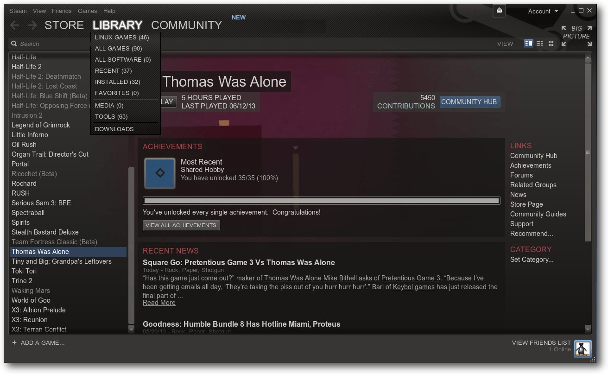Mein aktueller Steam-Account.
Die Chance
Da der Anteil der Linux-Steam-Benutzer noch weiter steigen soll, werden noch drei Linux-Spiele für Steam verlost. Zu gewinnen gibt es das preisgekrönte „Bastion“ [38], „Thomas was alone“ [39] und „Cubemen 2“ [40]. Um zu gewinnen, muss die folgende Frage richtig beantwortet werden: „Wie heißt (einer) der Gründer von Valve?“ Die Antworten können bis zum 8. September 2013, 23:59 Uhr über die Kommentarfunktion unterhalb des Artikels oder per E-Mail an[1] http://store.steampowered.com/news/183/
[2] http://www.phoronix.com/scan.php?page=news_item&px=MTA5ODk
[3] https://de.wikipedia.org/wiki/Quake_III_Arena
[4] http://www.winehq.org/
[5] https://de.wikipedia.org/wiki/Counter-Strike
[6] http://appdb.winehq.org/objectManager.php?sClass=version&iId=3507
[7] https://de.wikipedia.org/wiki/Modem
[8] http://www.steampowered.com/
[9] https://en.wikipedia.org/wiki/Steam_(software)#Beginnings
[10] https://de.wikipedia.org/wiki/LAN-Party
[11] http://www.gog.com/forum/general/list_of_drmfree_games_on_steam/page1
[12] http://www.phoronix.com/scan.php?page=article&item=steam_linux_script&num=1
[13] http://www.phoronix.com/scan.php?page=news_item&px=NTk5MQ
[14] http://www.phoronix.com/scan.php?page=news_item&px=ODU3NA
[15] http://www.phoronix.com/scan.php?page=news_item&px=MTIxMTQ
[16] http://www.phoronix.com/scan.php?page=news_item&px=MTA5MzQ
[17] http://www.phoronix.com/scan.php?page=news_item&px=MTI1NzE
[18] http://store.steampowered.com/news/9289/
[19] http://www.cheesed-off.com/229_cleanly-installing-steam-for-linux-beta-on-debian/
[20] http://www.gnu.org/licenses/gpl.html
[21] https://www.suse.com/de-de/
[22] http://www.redhat.de/
[23] http://doc.otrs.org/3.0/de/html/commercial-support-for-otrs.html
[24] https://de.wikipedia.org/wiki/Massively_Multiplayer_Online_Role-Playing_Game#Finanzierung_und_Kosten
[25] https://de.wikipedia.org/wiki/In-Game-Werbung
[26] http://www.desura.com/
[27] http://www.statesman.com/news/technology/download-distribution-opening-new-doors-for-inde-1/nRZHP/
[28] http://www.valvesoftware.com/privacy.htm
[29] http://store.steampowered.com/hwsurvey
[30] http://www.wired.com/wiredenterprise/2012/06/torvalds-nvidia-linux/
[31] http://www.youtube.com/watch?v=iYWzMvlj2RQ
[32] http://www.phoronix.com/scan.php?page=news_item&px=MTMyODA
[33] http://www.phoronix.com/scan.php?page=article&item=intel_haswell_linux&num=2
[34] http://www.humblebundle.com/
[35] http://groupees.com/
[36] http://blog.humblebundle.com/post/14549340777/1-min-price-for-getting-steam-keys
[37] http://www.phoronix.com/scan.php?page=news_item&px=MTE0MzQ
[38] http://supergiantgames.com/
[39] http://www.thomaswasalone.com/
[40] http://cubemen2.com/
| Autoreninformation |
| Florian E.J. Fruth hatte schon im vorherigen Jahrtausend Kontakt mit SuSE und Debian Linux. Dabei hat er schon immer versucht, auch Spiele unter seinem Standardbetriebssystem zu nutzen. |
Diesen Artikel kommentieren
Zum Index
Little Inferno – Dinge verbrennen leicht gemacht
von Dominik Wagenführ Es ist kalt im Land, sehr kalt. Seit Jahren schon schneit es vom Himmel herab und will gar nicht mehr aufhören. Dicke Wolken hängen über der Stadt und lassen die Sonne nicht mehr erscheinen. Aber glücklicherweise gibt es ja „Little Inferno Entertainment Fireplace”, den tollen, neuen Kamin fürs Wohnzimmer. Einfach den Katalog durchstöbern, Dinge bestellen und im Kamin verbrennen – und schon wird einem warm ums Herz. Das ist Little Inferno [1], das Spiel!Gefangen in der Endlosschleife
Das Spielprinzip von Little Inferno ist in der Tat so einfach, wie es in der Einleitung beschrieben ist. In einem Katalog kauft man Dinge ein wie Backsteine, Bauklötze, Puppen oder Teddybären, legt diese in seinen Kamin und verbrennt sie. Für das Verbrennen erhält man Geld – und zwar immer etwas mehr als der Gegenstand selbst gekostet hat. Und von diesem Geld kauft man sich wieder tolle, neue Dinge zum Verbrennen. Wäre dies das ganze Spiel, wäre man wirklich in einer Endlosschleife gefangen – in einer sehr monotonen noch dazu. Glücklicherweise steckt etwas mehr hinter dem Verbrennen von Gegenständen, denn es gibt sogenannte Kombos. Verbrennt man zwei oder drei Gegenstände gleichzeitig im Kamin und passen diese zusammen, erreicht man eine Kombo. Als Beispiel: Für die „Japanische Kombo“ – die Namen der Kombos plus die Anzahl der benötigten Gegenstände ist in einer Liste dargestellt – stellt man einfach einen Spielzeug-Ninja und ein Sushi-Röllchen in den Kamin und verbrennt diese gemeinsam.Japanische Kombo aus Sushi und Ninja.
Was hat man aber von diesen Kombos? In der Regel bringen sie etwas mehr Geld und zusätzlich Briefmarken ein. „Briefmarken?“ mögen jetzt manche fragen. Genau, Briefmarken! Diese werden für das Spiel nicht unbedingt benötigt, beschleunigen den Spielfluss aber erheblich. Jeder Gegenstand muss nach der Bestellung im Katalog natürlich geliefert werden. Je teurer ein Gegenstand, desto länger ist oft die Lieferzeit. Zugegeben dauert es eine gewisse Zeit, einen ganzen Mond einzupacken und zu verschicken… Um nicht ewig warten zu müssen, kann man mit Briefmarken den Versand und damit die Wartezeit stark verkürzen. Statt nach zwei Minuten Wartezeit ist das Paket dann schon in 10 Sekunden da. Was hat man von den Kombos aber nun – neben etwas mehr Spielspaß? Hat man den Katalog leer gekauft – Keine Sorge! Alle Gegenstände lassen sich beliebig oft nachkaufen! – und eine gewisse Anzahl an Kombos erreicht, gibt es einen neuen Katalog mit tollen, faszinierenden Gegenständen zum Verbrennen. Ob Plüschtiere, Haushaltsgegenstände oder Elektronikgeräte – wirklich alles brennt! 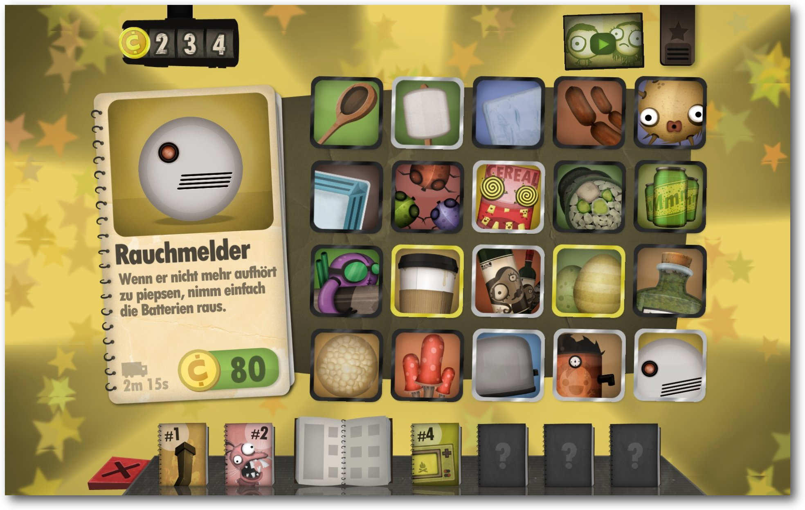
Appetitliche Sachen zum Verbrennen.
Das Spiel hinter dem Spiel
Ehrlich gesagt würden auch Hunderte Kataloge und Tausende von Gegenstände den Spielspaß auf Dauer nicht hochhalten können, wäre da nicht ein zweites Spiel neben dem „Feuerchen machen“ eingebaut. So erhält man nämlich in regelmäßigen Abständen Nachrichten. Zum einen vom geheimnisvollen Wettermann, der hoch über der Stadt über den Wolken in seinem Wetterballon sitzt und regelmäßig mitteilt, wie das Wetter wird. Und auch Miss Nancy, die Besitzerin der Tomorrow Corporation, die „Little Inferno“-Kamine verkauft, meldet sich ab und an zu Wort. Am interessantesten sind aber die Briefe einer unbekannten Freundin, die sich Sugar Plumps nennt. Sie möchte mit dem Spieler Freundschaft knüpfen und Gegenstände tauschen. Was dahintersteckt, wird hier nicht verraten, doch es ändert das Spiel am Ende völlig.Post von Sugar Plumps.
Sozialkritik?
Auch wenn es in den letzten 15 Minuten nicht mehr um das Verbrennen von Sachen geht – zumindest nicht direkt – bleibt der Grundton die ca. vier Stunden, die Little Inferno dauert, eher düster. Der Humor ist mitunter sehr schwarz und makaber und es macht Spaß, Dinge zu verbrennen. Aber irgendwann beginnt man sich schon zu fragen: „Wieso kaufe ich Dinge, nur um diese zu verbrennen. Sollten wir so mit unserem Geld umgehen?“ Die Antwort bleibt das Spiel schuldig. Das offene Ende lässt Interpretationsspielraum. Aber wie schon bei „World of Goo“ (siehe freiesMagazin 03/2009 [2], dessen Schöpfer Kyle Gabler zusammen mit Allan Blomquist und Kyle Gray das Spiel Little Inferno entwickelte) kann man die Kritik doch erahnen. Ob es nun das virtuelle Geldverbrennen an der Börse ist, die Klimaerwärmung, die die Menschen mit ihrem Hunger nach mehr Energie antrieben und antreiben, oder einfach nur die Sorglosigkeit, wie wir mit globalen Problemen umgehen. Sicherlich findet jeder etwas, woran Little Inferno ihn kritisch zu erinnern vermag. Der Trailer zum Spiel [3] deutet das bereits an. Glücklicherweise halten sich die Macher mit direkten Hinweisen aber zurück. Nirgends taucht ein erhobener Zeigefinger auf (was prinzipiell gelogen ist, denn so einen kann man in einem der Kataloge kaufen – und natürlich verbrennen), sodass man selbst entscheiden kann, wie kritisch man das Ganze sieht oder ob man einfach nur Spaß am Verbrennen von Dingen hat.…
Technisch brillant
Technisch ist Little Inferno ebenso wie World of Goo brillant. Es erfordert eben nicht immer alles eine riesige 3D-Engine, um ein ansprechend aussehendes Spiel zu erstellen. Das Feuer im Kamin oder die verschiedenen Gegenstände, die man kaufen kann – alles ist wunderschön gestaltet. Dazu passend sind auch die großartigen und lustigen Texte. Sei es in den Briefen der unbekannten Freundin, den Beschreibungen der Gegenstände oder in Referenzen auf andere Indie-Spiele. Hier zeigt sich ein toller Humor – der sogar im Deutschen funktioniert. Die Übersetzungen sind sehr gut gelungen. Nahtlos, unaufdringlich und doch so schön, dass man ihn nebenbei anhören kann, ist der Soundtrack von Kyle Gabler, den es auf der Webseite zum Anhören und kostenlosen Herunterladen gibt [4]. Wie schon bei World of Goo spielt Gabler mit verschiedenen Melodien, sowohl orchestral als auch elektronisch und findet zu jeder Spielsituation und jedem Gegenstand einen eigenen Sound. 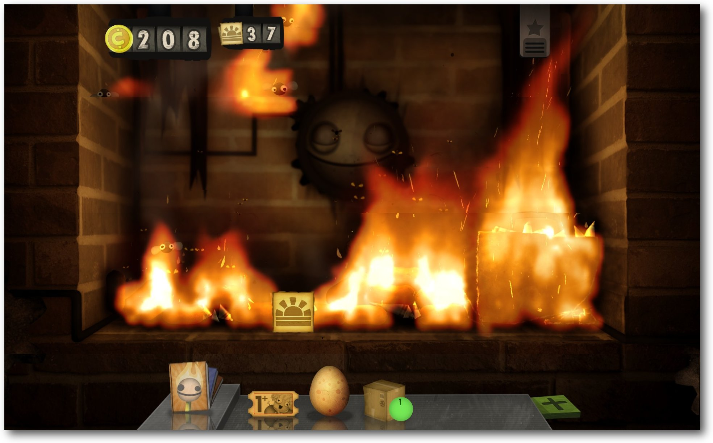Alles brennt so lichterloh!
Fazit
Little Inferno war Teil des achten Humble Indie Bundles [5], was im Mai 2013 erschien. Wahrscheinlich wäre ich von selbst nie auf die Idee gekommen, mir das Spiel einzeln zu kaufen, wäre es nicht Teil des Bundles gewesen. Im Endeffekt bin ich froh darüber. Wie schon bei World of Goo bietet Little Inferno viel Spielspaß und kurzweilige Unterhaltung für zwischendurch. Es gibt keinen 20-Stunden-Story-Modus, an dem man als Gelegenheitsspieler ein Jahr lang sitzt. Innerhalb von ein bis zwei Wochen kann man das Spiel ohne Probleme durchspielen, wenn man sich an manchen Tagen Abends ein Stündchen Zeit nimmt. Wer nicht gerne beim Spielen denkt oder actionreiche Kost bevorzugt, wird mit Little Inferno wohl weniger glücklich. Für alle anderen, vor allem eben Gelegenheitsspieler, ist das Spiel eine wunderbare Abwechslung zum Einheitspuzzler. Redaktioneller Hinweis: Weil das Spiel so gut ist, will der Autor Dominik Wagenführ es gerne unter das Linux-Spiele-Volk bringen. Deshalb gibt es ein Exemplar von Little Inferno für Linux zu gewinnen. Hierzu muss man nur folgende Frage beantworten: „Wie heißt das Projekt, dass Kyle Gabler zusammen mit anderen Studenten an der Carnegie Mellon University startete und heute noch zusammen mit seinen Mitstreitern betreut?“ Die Antworten können bis zum 8. September 2013, 23:59 Uhr, über die Kommentarfunktion unterhalb des Artikels oder per E-Mail an redaktion@freiesmagazin.de geschickt werden. Die Kommentare werden aber bis zum Ende der Verlosung nicht freigeschaltet. Das Spiel wird dann unter allen richtigen Einsendungen verlost. Links[1] http://tomorrowcorporation.com/littleinferno
[2] http://www.freiesmagazin.de/freiesMagazin-2009-03
[3] http://www.youtube.com/watch?v=-0TniR3Ghxc
[4] http://tomorrowcorporation.com/little-inferno-soundtrack
[5] http://blog.humblebundle.com/post/51572104517/make-way-for-humble- indie-bundle-8
| Autoreninformation |
| Dominik Wagenführ (Webseite) spielt sehr gerne, inzwischen nur unter Linux. Nach World of Goo begeisterte ihn auch Little Inferno. |
Diesen Artikel kommentieren
Zum Index
Rezension: Einführung in Python 3
von Jochen Schnelle Python [1] gilt als besonders leicht zu erlernende Programmiersprache und ist somit gerade für Programmieranfänger interessant. Das im Juli diesen Jahres erschienene Buch „Einführung in Python 3“ richtet sich primär an Anfänger und behandelt die aktuelle Python Version 3 – eigentlich zwei sehr gute Voraussetzungen. Redaktioneller Hinweis: Wir danken dem Carl Hanser Verlag für die Bereitstellung eines Rezensionsexemplares. Der Untertitel des Buchs lautet „in einer Woche Programmieren lernen“ – ein erst einmal ehrgeizig klingendes Ziel. In der Einleitung bestätigt der Autor Bernd Klein, welcher u. a. auch Kurse zum Thema Programmierung mit Python veranstaltet, dieses Ziel nochmals. Und richtigerweise folgt dann auch direkt die Relativierung: Ja, man kann in einer Woche Programmieren lernen und nein, man kann dann sicherlich noch nicht jedes Problem programmtechnisch lösen.Dreigeteilter Inhalt
Der Inhalt des Buches ist in drei Teile unterteilt. Im ersten Teil werden dem Leser die Grundlagen von Python vermittelt wie die verschiedenen Datentypen sowie den Umgang damit, Kontrollstrukturen, Schreiben und Lesen von Dateien, Umgang mit Modulen und Funktionen, Rekursion und Grundlegendes zur objektorientierten Programmierung. Im zweiten Teil werden dann automatisierte Tests, Systemprogrammierung (mittels des os-Moduls), reguläre Ausdrücke, List Comprehension, Generatoren sowie das externe Modul NumPy behandelt. Im dritten Teil gibt es dann noch drei ausführliche Beispiele inklusive Erklärungen, welche das zuvor Erlernte vertiefen. Programmiert werden dabei ein Modul zur Bruchrechnung, eine Textversion des Brettspiels „Master Mind“ sowie ein Bayes-Klassifikator [2] für Texte. Am Ende eines jeden Kapitels finden sich einige Übungsaufgaben zu dem zuvor behandelten Thema. Die vollständigen Lösungen inklusive einiger Erklärungen bilden dann den Abschluss des Buches.Licht …
Das Buch ist durchweg gut und flüssig zu lesen, auch wenn es an diversen Stellen doch einige Anglizismen enthält. Alle Beispiele sind vollständig im Buch abgedruckt, sodass dieses sich auch ohne Weiteres zur „Offline Lektüre“ eignet. Außerdem stehen alle Listings zum Download bereit. Bei den Inhalten ist das Kapitel zur Objektorientierung und zum Erstellen eigener Klassen gut gelungen, da von den Grundlagen bis zur Überladung von Operatoren alles erklärt und anhand des weiter oben bereits erwähnten Moduls zur Bruchrechnung anschaulich gezeigt wird. Gut ist auch das Kapitel zu Iteratoren und Generatoren – beides wird in Python ja gerne eingesetzt – sowie die Erklärungen und Beispiele zu regulären Ausdrücken. Das Kapitel zur Python Bibliothek NumPy ist zwar für Einsteigerliteratur eher ungewöhnlich, behandelt aber recht kompakt und verständlich Matrizenrechnung und lineare Algebra an Aufgaben, wie sie auch in der Schule (Mittelstufe/Oberstufe) vorkommen. Ebenfalls sehr ausführlich ist das Kapitel zum os-Modul aus der Python-Standardbibliothek, wobei hier aber in erster Linie Leser, welche die Programmiersprache zur Systemprogrammierung und -verwaltung nutzen wollen, auf ihre Kosten kommen.… und Schatten
Aber es gibt auch inhaltliche Schattenseiten – und davon leider einige. So wird zum Beispiel an keiner Stelle erklärt, welche Arten von Strings (Unicode- und Bytestrings) es in Python 3 gibt. Ein Stolperstein, über den höchstwahrscheinlich jeder Einsteiger irgendwann stolpern wird. Außerdem werden Strings fast durchweg mittels + verknüpft. Das funktioniert zwar, jedoch gilt es als unschön. Der empfohlene und bessere Weg mittels der String-Methode format() taucht zwar in manchen Beispielen im Buch auf, allerdings wird er an keiner Stelle erklärt. Und das, obwohl die Kapitel zu Strings im Buch ansonsten recht ausführlich sind. Weiterhin wird nirgendwo im Buch auf die Python-übliche Formatierungen von Einrückungen mittels vier Leerzeichen eingegangen – wenn auch alle Listings im Buch korrekt formatiert sind. Einen Hinweis auf die PEP 8 [3] – den „Python Style Guide“ – sucht man auch vergebens. Aufgrund das Umfangs der bei Python mitgelieferten Module kann – und muss – man als Buchautor sicherlich nicht alle behandeln. Die Auswahl im vorliegenden Buch erscheint aber nichts desto trotz zu stark eingeschränkt, selbst für Anfänger. Das Thema Datenpersistenz wird auf gerade zwei Seiten zum Modul pickle abgehandelt. Mögliche Alternativen – welche Python ebenfalls an Bord hat – wie z. B. anydbm oder SQLite werden nicht erwähnt. Ebenso geht der Autor an keiner Stelle auf die Möglichkeiten von Python zum Umgang mit strukturierten Daten wie XML, JSON oder CSV ein. Genau so wenig werden Themen rund um das Internet behandelt. Das ganze wiegt um so schwerer, da das Buch keinerlei Links oder Hinweise auf (weiterführende) Quellen enthält, wo der interessierte Leser weiter beziehungsweise zusätzlich lesen könnte. Wie weiter oben erwähnt enthält das Buch ein eigenes Kapitel zum Thema Rekursion, rekursive Funktionsaufrufe findet man in diversen Beispielen. Leider erwähnt der Autor nirgends, dass Python von Hause aus eine eingeschränkte Rekursionstiefe hat, noch wie man diese ändern könnte. Ärgerlich ist auch, dass der Leser an diversen Stellen im Buch Sätze wie „der blaue Kreis in Abbildung …“ findet, aber alle Abbildungen ausschließlich in Graustufen gedruckt sind.Fazit
Auch wenn das Buch einige gute Kapitel und Ansätze hat, überwiegt der schwache Eindruck. Besonders die irgendwo zwischen ungewöhnlich und unzureichend angesiedelte Auswahl der besprochenen Python-Module machen es dem geneigten Anfänger schwer, einen guten Einblick in die Möglichkeiten von Python zu bekommen. Wer sich für Python-Programmierung interessiert und auch dieses Buch in der engeren Auswahl hat, sollte beim Buchhändler seiner Wahl einen Blick in das Buch werfen und gegebenenfalls auch mit anderen Büchern vergleichen. Als alleiniges Werk reicht das Buch aufgrund der zu geringen Themenabdeckung jedenfalls auf keinen Fall. Redaktioneller Hinweis: Auch wenn das Buch seine Schattenseiten hat, kann es sicher für den ein oder anderen hilfreich sein, weswegen wir es hier verlosen. Die Gewinnfrage lautet: „Wie weiter oben erwähnt besitzt Python von Hause aus eine voreingestellte maximale Rekursionstiefe. Wie ist der Standardwert dafür?“ Die Antworten können bis zum 8. September 2013, 23:59 Uhr über die Kommentarfunktion unterhalb des Artikels oder per E-Mail an| Buchinformationen | |
| Titel | Einführung in Python 3: In einer Woche programmieren lernen [4] |
| Autor | Bernd Klein |
| Verlag | Carl Hanser Verlag |
| Umfang | 447 Seiten |
| ISBN | 978-3446435476 |
| Preis | 24,99 Euro |
Links
[1] http://www.python.org
[2] https://de.wikipedia.org/wiki/Bayes-Klassifikator
[3] http://www.python.org/dev/peps/pep-0008/
[4] http://www.hanser-fachbuch.de/buch/Einfuehrung+in+Python+3/9783446435476
| Autoreninformation |
| Jochen Schnelle (Webseite) interessiert sich generell für Programmierung, insbesondere für Python. |
Diesen Artikel kommentieren
Zum Index
Rezension: Rapid Android Development
von Michael Niedermair Das Buch „Rapid Android Development“ stellt eine Einführung der etwas anderen Art in die Android-Programmierung dar. Als Grundlage dient hier die Entwicklungsumgebung „Processing“ [1], die einen Ersatz für Eclipse darstellt, der darauf abzielt, Studenten die wesentlichen Lernziele in Sachen App-Programmierung zu vermitteln. Redaktioneller Hinweis: Wir danken O'Reilly für die Bereitstellung eines Rezensionsexemplares. Der Autor Daniel Sauter ist Künstler und Professor im Bereich „New Media Arts“ an der Universität von Illinois (School of Art and Design) in Chicago und Organisator der „Chicago Mobile Processing Conference“.Was steht drin?
Das Buch ist in 13 Kapitel mit Einleitung, Anhang und Index aufgeteilt und umfasst 363 Seiten. Am Ende wird der Druckbogen mit 7 Seiten Werbung für andere Bücher abgeschlossen. Der wesentliche Unterschied zu anderen Android-Büchern über Softwareentwicklung für Android ist, dass hier nicht eine Entwicklungsumgebung wie Eclipse verwendet wird, sondern die IDE „Processing“, die einem viele Einstellungen und Definitionen im Programmcode abnimmt und diese „unsichtbar“ im Hintergrund erledigt. Dadurch wird der Code sehr übersichtlich und vom „Boilerplatecode“ befreit. Das erste Kapitel (14 Seiten) beschreibt, welche Programme, Tools etc. benötigt werden und wie man Processing installiert, sodass Android-Apps erstellt werden können. Anschließend wird ein kleines Beispiel erstellt und gezeigt, wie man dieses im Simulator startet. Ein Export der Dateien in ein Eclipse-Android-Projekt wird kurz beschrieben. Im zweiten Kapitel (22 Seiten) beschäftigt sich der Autor damit, wie man mit dem Android Touch-Display arbeitet und im Code darauf reagiert. Als Beispiel werden „Fingerwischer“ mit farbigen Ellipsen dargestellt. Danach wird die Ketai Library eingeführt, die viele Funktionen bietet, u. a. die Themen Sensorabfrage, Kamera, Location, Gesichtserkennung, Bluetooth, WiFi, NFC und Gesten abdeckt. Das dritte Kapitel (28 Seiten) beschäftigt sich mit mit der Abfrage von Sensoren, z. B. für Beschleunigung, Magnetfeld, Licht, und der Anzeige der jeweiligen Messwerte. Das viertel Kapitel (23 Seiten) widmet sich dem Kompass und der Ortsbestimmung und wie man den Weg zu einem bestimmten Ziel findet. Kapitel fünf (32 Seiten) widmet sich der Kamera, dem Aufnehmen von Bildern und Videos und deren Bearbeitung. In Kapitel sechs (24 Seiten) geht es um WiFi und das Netzwerk. Im Folgekapitel sieben (38 Seiten) wird der Netzwerkbereich mit Peer-to-Peer, Bluetooth und WiFi-Direct erweitert. Das achte Kapitel (23 Seiten) beschäftigt sich mit NFC (Near Field Communication), z. B. wie man die URL von einem NFC-Tag auslesen kann. In Kapitel neun (30 Seiten) geht es um Daten, beispielsweise, wie man diese im Dateisystem abspeichert oder in einer SQLite Datenbank. Das zehnte Kapitel (17 Seiten) vertieft das Thema SQLite, beispielsweise wie man Sensordaten in der DB abspeichert. Das elfte Kapitel (23 Seiten) stellt eine Einführung mit kleinen Beispielen in 3D mit OpenGL dar. Im Folgekapitel zwölf (26 Seiten) wird das Thema mit verschiedenen Shapes und 3D Objekten vertieft. Es wird u. a gezeigt, wie man SVG-Grafiken darstellt. Das dreizehnte Kapitel (26 Seiten) zeigt, wie man Projekte nach Eclipse exportiert und dann Apps veröffentlicht. Im Anhang findet man eine Übersicht der verschiedenen Android-Versionen, die Beschreibung der Ketai Library und Infos zum Troubleshooting. Am Ende folgt das Stichwortverzeichnis (13 Seiten).Wie liest es sich?
Das Buch ist für Einsteiger geschrieben. Dem englischen Text kann auch ein Leser gut folgenden, der nicht oft englischsprachige Bücher liest. Durch die IDE Processing und die Ketai-Bibliothek [2] werden die Beispiele sehr einfach, kurz und übersichtlich. Somit wird dem Leser sehr viel Ballast erspart und er kann sich auf das Wesentliche beschränken. Programmiergrundkenntnisse in Java sind hier erforderlich. Die vielen Beispiele bauen aufeinander auf und werden bis zum Ende des Buchs immer umfangreicher und komplexer, lassen sich aber alle gut nachvollziehen. Alle Code-Beispiele sind ausreichend gut erläutert. Im Buch werden nur die wichtigen Codeteile abgedruckt, der komplette Code findet sich auf der Webseite des Verlages [3]. Jeder Anfänger kann der Beschreibung gut folgen. Der erfahrene Leser kann ohne weiteres Kapitel überspringen, ohne dabei in anderen Kapiteln Probleme zu bekommen.Kritik
Das Buch ist für Einsteiger geschrieben und dafür sehr gut geeignet. Der Autor hat es geschafft, komplexe Funktionalitäten stark zu vereinfachen. Man merkt deutlich, dass der Autor hier viel Erfahrung in didaktischer Reduktion hat. Will man aber umfangreichere Apps schreiben, muss man irgendwann die IDE Processing verlassen und beispielsweise auf Eclipse [4] umsteigen. Toll dabei ist, dass sich alle Processing-Projekte in Eclipse-Projekte umwandeln lassen, sodass man dann dort aufbauen und weiterentwickeln kann. Der Umweg über Processing lohnt sich für den Anfänger auf jeden Fall, da viele Stolpersteine auf diesem Wege entfallen und der Spaß- und Erfolgsfaktor erhalten bleibt. Das Stichwortverzeichnis ist für den Buchumfang sehr gut und man findet die entsprechenden Stellen schnell. Das Preis-Leisungsverhältnis (Buch, Umfang und Preis) macht einen guten Eindruck. Gesamt betrachtet gefällt mir das Buch sehr gut und ich werde es bei meinen Schülern als Einstiegsbuch für die Android-Programmierung empfehlen.| Buchinformationen | |
| Titel | Rapid Android Development – Build Rich, Sensor-Based Applications with Processing [5] |
| Autor | Daniel Sauter |
| Verlag | O'Reilly, Mai 2013 |
| Umfang | 370 Seiten |
| ISBN | 978-1-93778-506-2 |
| Preis | 29,00 € |
Links
[1] http://processing.org/
[2] https://code.google.com/p/ketai/
[3] http://pragprog.com/titles/dsproc/source_code
[4] http://eclipse.org/
[5] http://www.oreilly.de/catalog/9781937785062/index.html
| Autoreninformation |
| Michael Niedermair ist Lehrer an der Münchener IT-Schule und Koordinator für den Bereich Programmierung und Anwendungsentwicklung. Er beschäftigt sich seit Jahren mit vielen Programmiersprachen, u. a. mit der Android-Programmierung. |
Diesen Artikel kommentieren
Zum Index
Rezension: Android 4 – Übungsbuch für die App-Entwicklung
von Michael Niedermair Das Buch „Android 4“ stellt ein Übungsbuch dar und richtet sich an interessierte Leser, die schon Grunderfahrung mit der Android-Entwicklung haben und diese mit zahlreichen Beispielen vertiefen möchten. Dabei enthält jedes Kapitel Übungsaufgaben mit vollständigen und kommentierten Lösungen. Redaktioneller Hinweis: Wir danken dem mitp-Verlag für die Bereitstellung eines Rezensionsexemplares. Die Autorin Elisabeth Jung ist freie Autorin und hat früher Grundlagen der Informatik unterrichtet. Sie hat schon einige Übungsbücher zu Java 6 & 7, Servlets und JSP geschrieben.Was steht drin?
Das Buch ist in drei Kapitel mit Einleitung und Index aufgeteilt und umfasst 454 Seiten. Zum Schluss wird der Druckbogen mit zehn Seiten Werbung für andere Bücher gefüllt. Das erste Kapitel (34 Seiten) stellt die Architektur und Installation von Android-Applikationen in den Vordergrund. Angefangen vom Unterschied zwischen „Native Apps” und „Web-Apps” und gefolgt vom Aufbau einer App geht es schnell zum ersten Android-Projekt mit den Layout-, Ressourcen- und Klassendateien. Abgeschlossen wird der Bereich mit der ersten Übung „HalloApp“ mit Lösung. Das zweite Kapitel (138 Seiten) hat das Thema „Einführung in die App-Programmierung“. Es wird dabei mit DDMS (Dalvik Debug Monitor Server [1]) begonnen und dem sinnvollen Einsatz von Log-Meldungen. Es folgt auch dann dazu gleich die erste Übung „LogCat-Meldungen ausgeben“. Anschließend folgt die Ereignisbehandlung, sowie die Menü- und Dialog-Klassen. Danach geht es gleich an die Telefon-, SMS- und E-Mail-Funktion und das Android Dateisystem. Mit den Themen Speichermedien, URLs im Browser anzeigen, Adapter-Klassen etc. und Animation geht es weiter. Zum Schluss folgen die Lösungen zu den vielen Übungen. Das dritte Kapitel (259 Seiten) widmet sich am Anfang der erweiterten App-Programmierung mit den Themen SQLite-Datenbank, Content Provider, Multimedia, Sensoren, Geocoding, Google Maps. Danach folgen Prozesse, Threads und asynchrone Tasks. Weiter geht es mit dem Veröffentlichen von Apps und dem Android SDK 4.2.2. Zum Abschluss folgen wieder die Lösungen zu den vielen Übungen.Wie liest es sich?
Das Buch ist als Übungsbuch ausgelegt. Es ist daher notwendig, dass man nicht nur Java-Kenntnisse mitbringt, sondern auch bereits Erfahrung mit der Programmierung von Android-Programmen hat. Die Aufgabenstellungen zu den Übungen sind klar formuliert und bauen aufeinander auf. Es folgen dann oft viele Seiten mit Screenshots, bei denen es leider manchmal schwer fällt, den roten Faden nicht zu verlieren. Die im Buch gezeigten Lösungen sind alle kommentiert und mit Syntaxhighlighting werden die wichtigsten Stellen hervorgehoben. Drucktechnisch wurde bei den Lösungen auf Leerzeilen verzichtet, was dem Codeverständnis nicht immer gut tut. Auch wurden die Beispiele (Sourcecode, XML-Dateien, …) komplett abgedruckt. Der Code zu den Beispielen ist online verfügbar, so dass man ihn nicht abtippen muss um ein Beispiel auszuprobieren (unter „Downloads“ [2]).Kritik
Das Buch ist als Übungsbuch geschrieben und erfüllt diesen Anspruch auch gut. Man merkt deutlich, dass die Autorin mit Übungsbüchern Erfahrung hat. Leider sind die Screenshots oft zu einem Paket zusammengefasst, z. B. bei einem Block um die 80 Stück auf 20 Seiten. Hier verliert man sehr leicht den Überblick. Die Codebeispiele mit den Kommentaren enthalten leider keine Leerzeilen (es sollte wohl Platz gespart werden), was gerade bei langen Listings nicht zum Verständnis beiträgt. Zum Glück kann man diese in der IDE deutlich besser betrachten (hier hilft die Eclipse-Funktion „Source-Format“) und kann jeweils an die entsprechende Stelle springen. Das verwendete Syntaxhighlighting kann nicht immer nachvollzogen werden. Meist sind jedoch die Klassendefinition und der Methodenkopf hervorgehoben. Wünschenswert wäre hier jedoch eine übersichtlichere Darstellung mit einem Auszug der wichtigsten Stellen. Den kompletten Code kann man sich dann ja in der Datei genauer betrachten. Die Beispiele und Übungen sind hingegen gut aufgebaut und die dazugehörigen Erklärungen erleichtern einem das Verständnis. Das Stichwortverzeichnis ist merkwürdigerweise erst nach einer zusätzlichen Seite Werbung zu finden. Es sieht teilweise so aus, als wäre das Stichwortverzeichnis automatisch generiert worden. Es sind meist viel zu viele Seitenangaben pro Eintrag vorhanden (beispielsweise bis zu 16 Seitenangaben pro Eintrag) und der Haupteintrag ist dabei nicht hervorgehoben, was dem Leser das Auffinden doch deutlich schwerer macht. Dabei sind Stichwörter, Klassen und Methoden bunt gemischt. Das Preis-Leistungsverhältnis (Buch, Umfang und Preis) macht einen guten Eindruck, allerdings hätte der abgedruckte Quellcode etwas gekürzt werden können um die Übersichtlichkeit zu verbessern. Gesamt betrachtet muss man trotz der oben genannten Schönheitsfehler das Buch als gut bewerten. Die Übungen sind gut und tragen dazu bei, dass man sich schnell und praxisnah in die einzelnen Android-Bereiche einarbeiten kann.| Buchinformationen | |
| Titel | Android 4 – Übungsbuch für die App-Entwicklung [3] |
| Autor | Elisabeth Jung |
| Verlag | mitp, 2013 |
| Umfang | 464 Seiten |
| ISBN | 978-3-82669-501-8 |
| Preis | 24,95 € (e-book 21,99 €) |
Links
[1] https://developer.android.com/tools/debugging/ddms.html
[2] http://www.mediendb.hjr-verlag.de/upload/upload.html?isbn=978-3-8266-9501-8
[3] http://www.it-fachportal.de/shop/buch/Android 4/detail.html,b188498
| Autoreninformation |
| Michael Niedermair ist Lehrer an der Münchener IT-Schule und Koordinator für den Bereich Programmierung und Anwendungsentwicklung. Er hat dort das Zusatzangebot „Androidprogrammierung“ konzipiert und eingeführt. |
Diesen Artikel kommentieren
Zum Index
Leserbriefe
Für Leserbriefe steht unsere E-MailadresseLeserbriefe und Anmerkungen
Editorial
-> Ich glaube, der Rückgang liegt daher, dass es in der letzten Ausgabe nicht so viele interessante Themen gab. Ich freue mich immer auf neue Ausgaben und lese und downloade alle. Ich schätze eure Arbeit sehr und hoffe, dass ihr so weitermacht!Andreas (Kommentar) -> Ich lade mir zwar jede freiesMagazin-Ausgabe herunter, nur ist die Anzahl der für mich interessanten Artikeln in den letzten Monaten stark gesunken. Ich bin ein überdurchschnittlich interessierter User, deshalb sind mir die meisten Artikel in freiesMagazin zu technisch. Für mich von Nutzen sind Artikel über Distributionen (z. B. Reviews zu neuen Versionen von Ubuntu und Fedora) und über die Bedienung von Programmen. Der aktuellen Ausgabe (freiesMagazin 08/2013) habe ich mich wieder länger gewidmet, weil die Artikel „Firefox OS”, „Linux-Dateisysteme im Vergleich” und „XBMC” genau mein Wissensbedürfnis befriedigen. Gratulation!!
Martin (Kommentar) <- Vielen Dank für die Kommentare. Wir versuchen natürlich die Vielfalt der Artikel zu variieren, sind dabei aber stark auf die freien Autoren angewiesen. Wenn diese lieber über bestimmte Themen wie Programmierung schreiben, dann füllen diese natürlich mehr unsere Seiten. Aber vielleicht finden sich ja da draußen noch mehr Autoren, die etwas zu einem nicht-technischem Thema schreiben wollen.
Dominik Wagenführ
Firefox OS
-> Firefox OS wirkt für mich wie ein (vergeblicher) Versuch, am Smartphone-Markt mitzumischen: Da kam wohl ein Mitarbeiter von Mozilla auf die Idee, Smartphones wären die Zukunft und Mozilla muss da jetzt unbedingt auch was zu beitragen, nach dem Motto: „Was die haben, brauchen wir auch!“, jedoch fehlt Mozilla hierin jahrelange Erfahrung. Aber genau da liegt das Problem. Bei Firefox OS handelt es sich lediglich um eine Nachmache bestehender Smartphone-Betriebssysteme, ohne jegliche Revolution oder sehenswerte Neuerungen. Also wird es keine offensichtliche Gründe geben, dieses System zukünftig auf Handys zu verwenden. Gut, der wohl einzige Grund wird für manche sein, dass das System komplett offen und frei ist, was aber die meisten potenziellen Kunden kaum interessieren wird. Im Gegenteil, zu viel Freiheit führt für „normale” Nutzer wieder zu Problemen. So können sie z. B. jegliche Software darauf installieren, ohne zu wissen, was sie gerade tun, oder z. B. den Apps im Nachhinein Rechte entziehen, was irgendwann zwangsläufig zu Problemen bzw. Softwareabstürzen führen wird. Ob Firefox OS ein Erfolg wird, kann nur die Zukunft zeigen, ich sehe dem Ganzen aber sehr kritisch entgegen.Maximilian (Kommentar)
Leserbriefe zum Raspberry Pi
-> In den Leserbriefen werden hohe Erwartungen (Blu-Ray Inhalte wiedergeben, etc.) an den kleinen Raspberry gestellt. Zugegeben, deren Marketing suggeriert das ja auch. […] Ich besitze selbst einen Raspberry und würde (trotz Marketing-Versprechen) nicht auf die Idee kommen einen 700MHz Prozessor und 512MB RAM Full-HD Videos wiedergeben zu lassen. Bei mir leistet er seine Dienste als „Besseres NAS“ mit DHCP, DNS und (bald auch) NIS Server für mein Heimnetz. […]H.Z. (Kommentar) Die Redaktion behält sich vor, Leserbriefe gegebenenfalls zu kürzen. Redaktionelle Ergänzungen finden sich in eckigen Klammern. Die Leserbriefe kommentieren
Zum Index
Veranstaltungskalender
| Messen | ||||
| Veranstaltung | Ort | Datum | Eintritt | Link |
| Joomladay | Nürnberg | 13.09.–14.09.2013 | 74 EUR | http://www.joomladay.de/ |
| BeGeistert 027 | Düsseldorf | 14.09.–15.09.2013 | 45 EUR | http://begeistert.org/ |
| Kieler Linuxtage | Kiel | 20.09.–21.09.2013 | frei | http://www.kieler-linuxtage.de/ |
| Software Freedom Day | Weltweit | 21.09.2013 | frei | http://softwarefreedomday.org/ |
| TUXcamp | Dreieich | 28.09.2013 | frei | http://rhscamp.mixxt.de/ |
| Ubucon | Heidelberg | 11.10.–13.10.2013 | 10 EUR | http://ubucon.de/ |
Vorschau
freiesMagazin erscheint am ersten Sonntag eines Monats. Die Oktober-Ausgabe wird voraussichtlich am 6. Oktober u. a. mit folgenden Themen veröffentlicht:- Desaster Recovery und Backup
Konventionen
An einigen Stellen benutzen wir Sonderzeichen mit einer bestimmten Bedeutung. Diese sind hier zusammengefasst:| $: | Shell-Prompt |
| #: | Prompt einer Root-Shell – Ubuntu-Nutzer können hier auch einfach in einer normalen Shell ein sudo vor die Befehle setzen. |
| ~: | Abkürzung für das eigene Benutzerverzeichnis /home/BENUTZERNAME |
Impressum ISSN 1867-7991
freiesMagazin erscheint als PDF, EPUB und HTML einmal monatlich.Erscheinungsdatum: 1. September 2013
| Kontakt | |
| Postanschrift | freiesMagazin |
| c/o Dominik Wagenführ | |
| Beethovenstr. 9/1 | |
| 71277 Rutesheim | |
| Webpräsenz | http://www.freiesmagazin.de/ |
| Autoren dieser Ausgabe | |
| Hans-Joachim Baader | Fedora 19 |
| Florian E.J. Fruth | Steam – Fluch oder Segen? |
| Mathias Menzer | Der August im Kernelrückblick |
| Michael Niedermair | Rezension: Rapid Android Development, Rezension: Android 4 - Praxisbuch für die App-Entwicklung |
| Jochen Schnelle | 960-Grid-System – Eine CSS-Bibliothek für Spaltenlayouts, Rezension: Einführung in Python 3 |
| Sujeevan Vijayakumaran | Liquid prompt – Eine erweiterte Prompt für Bash und zsh |
| Dominik Wagenführ | Little Inferno – Dinge verbrennen leicht gemacht |
| Redaktion | |
| Matthias Sitte | Sujeevan Vijayakumaran |
| Dominik Wagenführ (Verantwortlicher Redakteur) | |
| Satz und Layout | |
| Dominik Frey | Moritz Kiefer |
| Christoph Lehmann | Dominik Wagenführ |
| Korrektur | |
| Daniel Braun | Frank Brungräber |
| Vicki Ebeling | Stefan Fangmeier |
| Mathias Menzer | Christian Schnell |
| Karsten Schuldt | Toni Zimmer |
| Veranstaltungen | |
| Ronny Fischer | |
| Logo-Design | |
| Arne Weinberg (CC-BY-SA 3.0 Unported) |
Soweit nicht anders angegeben, stehen alle Artikel, Beiträge und Bilder in freiesMagazin unter der Creative-Commons-Lizenz CC-BY-SA 3.0 Unported. Das Copyright liegt beim jeweiligen Autor. freiesMagazin unterliegt als Gesamtwerk ebenso der Creative-Commons-Lizenz CC-BY-SA 3.0 Unported mit Ausnahme der Inhalte, die unter einer anderen Lizenz hierin veröffentlicht werden. Das Copyright liegt bei Dominik Wagenführ. Es wird erlaubt, das Werk/die Werke unter den Bestimmungen der Creative-Commons-Lizenz zu kopieren, zu verteilen und/oder zu modifizieren. Die xkcd-Comics stehen separat unter der Creative-Commons-Lizenz CC-BY-NC 2.5 Generic. Das Copyright liegt bei Randall Munroe.
Zum Index
File translated from TEX by TTH, version 3.89.
On 1 Sep 2013, 12:46.